<!doctype html>
<html lang="en">
<head>
  <meta charset="utf-8">
  <meta name="viewport" content="width=device-width, initial-scale=1">
  <title>arxiv digest — 2026-08-27</title>
  <style>
:root {
  --bg: #ffffff;
  --fg: #1f2328;
  --muted: #59636e;
  --border: #d0d7de;
  --card: #f6f8fa;
  --link: #0969da;
}
body {
  max-width: 980px;
  margin: 0 auto;
  padding: 2rem 1rem 5rem;
  font-family: -apple-system, BlinkMacSystemFont, "Segoe UI", Helvetica, Arial, sans-serif;
  line-height: 1.55;
  color: var(--fg);
  background: var(--bg);
}
a { color: var(--link); }
img { max-width: 100%; height: auto; }
pre, code { background: var(--card); border-radius: 6px; }
pre { padding: 1rem; overflow-x: auto; }
blockquote { border-left: 4px solid var(--border); padding-left: 1rem; color: var(--muted); }
details { margin: 0.6rem 0; }
summary { cursor: pointer; font-weight: 600; }
.paper-figures-scroll {
  display: flex;
  gap: 1rem;
  overflow-x: auto;
  overscroll-behavior-x: contain;
  padding: 0.75rem 0.25rem 1rem;
  margin: 1rem 0 1.25rem;
  border-top: 1px solid var(--border);
  border-bottom: 1px solid var(--border);
  scroll-snap-type: x proximity;
}
.paper-figure-card {
  flex: 0 0 min(260px, 72vw);
  scroll-snap-align: start;
  background: var(--card);
  border: 1px solid var(--border);
  border-radius: 12px;
  padding: 0.55rem;
}
.paper-figure-card img {
  display: block;
  width: 100%;
  max-height: 240px;
  object-fit: contain;
  background: white;
  border-radius: 8px;
}
.paper-figure-caption {
  display: block;
  margin-top: 0.5rem;
  color: var(--muted);
  font-size: 0.85rem;
}
.figure-strip-hint {
  color: var(--muted);
  font-size: 0.9rem;
  margin-bottom: -0.3rem;
}
</style>
  <!-- MathJax: renders $...$ inline math and $$...$$ display math, plus
       \(...\) and \[...\]. Loaded from the official CDN; works offline
       once cached. Configured to skip code/pre blocks so arxiv IDs that
       look like dollar amounts don't get mangled. -->
  <script>
    window.MathJax = {
      tex: {
        inlineMath: [['$', '$'], ['\\(', '\\)']],
        displayMath: [['$$', '$$'], ['\\[', '\\]']],
        processEscapes: true,
        processEnvironments: true
      },
      options: {
        skipHtmlTags: ['script', 'noscript', 'style', 'textarea', 'pre', 'code'],
        ignoreHtmlClass: 'tex2jax_ignore',
        processHtmlClass: 'tex2jax_process'
      }
    };
  </script>
  <script id="MathJax-script" async
    src="https://cdn.jsdelivr.net/npm/mathjax@3/es5/tex-chtml.js"></script>
</head>
<body>
<header style="background-color: #333; color: white; padding: 15px; margin-bottom: 20px;">
  <h1 style="margin: 0; font-size: 24px;">
    <a href="https://ochelpan.github.io/arXiv_clean/" style="color: white; text-decoration: none;">Main</a>
  </h1>
</header>

<h1>Daily arXiv Report</h1>

<hr>
<p>
<a href="index.html">← Index</a>
 · <a href="papers_05.html">← Previous</a>
</p>
<hr>

<h2>Papers 101–114</h2>
<p><a id="paper-2608.24684"></a></p>
<h3 id="visualizing-flat-band-spatial-renormalization-in-rhombohedral-graphene-superlattices"><a href="http://arxiv.org/abs/2608.24684v1">Visualizing flat-band spatial renormalization in rhombohedral graphene superlattices</a></h3>
<p><strong>Authors:</strong> Peng-Cheng Pan, Shihao Zhang, Yang Zhang, Ji Huang, Ling-Hui Tong, Chen-Chen Xu, Yuan Tian, Li Zhang, Lijie Zhang, Yuanyuan Hu, Wen-Xiao Wang, Zhihui Qin, Long-Jing Yin<br>
<strong>Type:</strong> both · <strong>Category:</strong> strongly correlated electrons · <strong>PDF:</strong> <a href="https://arxiv.org/pdf/2608.24684v1">https://arxiv.org/pdf/2608.24684v1</a><br>
<strong>Analysis basis:</strong> full PDF text, analyzed in chunks
<strong>Topic relevance:</strong> <code>analog quantum simulation</code> <strong>3/5</strong> · <code>Frenkel-Kontorova</code> <strong>1/5</strong> · <code>Keldysh / 2PI / non-Gaussian methods</code> <strong>1/5</strong></p>
<div class="figure-strip-hint">↔ Scroll figures horizontally</div>
<div class="paper-figures-scroll">
<figure class="paper-figure-card">
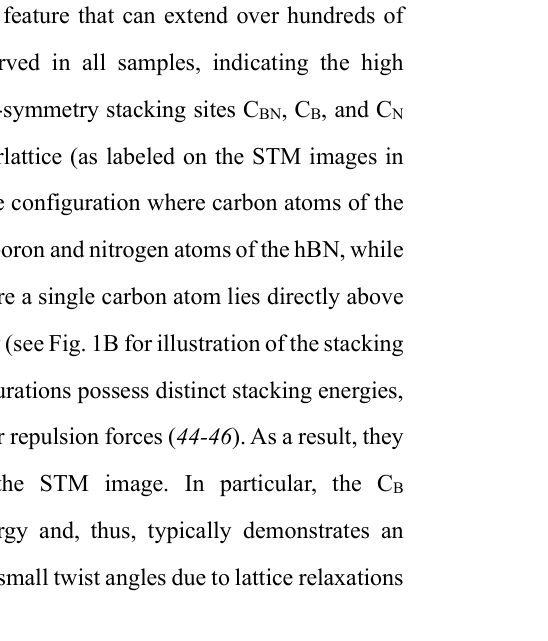
<figcaption class="paper-figure-caption"><b>Fig 1.</b> Figure 1, E and F, shows the representative dI/dV spectra—reflecting the local</figcaption>
</figure>
<figure class="paper-figure-card">
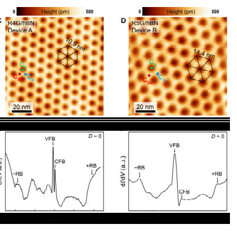
<figcaption class="paper-figure-caption"><b>Fig 2.</b> Fig. 1. Topography and spectroscopy of RG/hBN moiré superlattices. (A)</figcaption>
</figure>
<figure class="paper-figure-card">
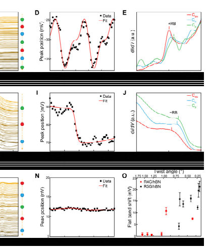
<figcaption class="paper-figure-caption"><b>Fig 3.</b> Fig. 2. Visualization of spatial band renormalization in RG/hBN superlattices. (A,</figcaption>
</figure>
<figure class="paper-figure-card">
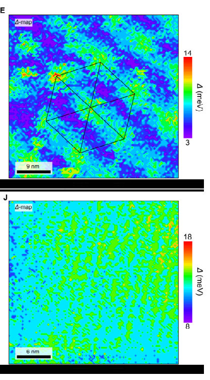
<figcaption class="paper-figure-caption"><b>Fig 4.</b> Fig. 3. Spatial reshaping of electronic correlations. (A and F) STM topographic</figcaption>
</figure>
<figure class="paper-figure-card">
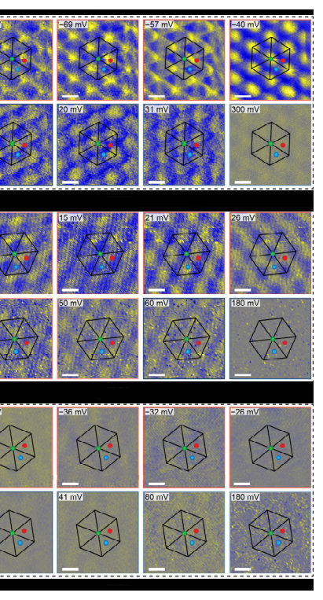
<figcaption class="paper-figure-caption"><b>Fig 5.</b> Fig. 4. Visualization of spatial electronic localization transition. (A, D, and G) STM</figcaption>
</figure>
</div>

<p><strong>Summary.</strong> This work uses STM to visualize how the moiré potential in graphene/hBN superlattices causes a periodic, site-dependent renormalization of flat electronic bands. The key finding is that this spatial modulation only exists above a critical moiré period ($\sim 10 	ext{ nm}$), establishing a direct, real-space link between the moiré potential and the emergence of topological order like the FQAHE.</p>
<p><strong>Why it may be interesting.</strong> The direct visualization of how a geometric potential (the moiré pattern) dictates the emergence of topological order in a correlated system provides a concrete, experimentally verifiable mechanism for realizing exotic quantum states.</p>
<details>
<summary>Detailed structure</summary>
<p><strong>Main problem.</strong> The study aims to clarify the microscopic role of the moiré potential in driving emergent correlated phases, such as the Fractional Quantum Anomalous Hall Effect (FQAHE), in rhombohedral graphene superlattices.</p>
<p><strong>Main result.</strong> The authors visualize that the moiré potential causes a spatially periodic renormalization of flat bands, and this modulation vanishes below a critical moiré period ($\sim 10 	ext{ nm}$), which coincides with the threshold for FQAHE.</p>
<p><strong>Method.</strong> The research combines Scanning Tunneling Microscopy/Spectroscopy (STM/STS) to image real-space electronic structure with theoretical modeling to attribute the modulation to atomic corrugation-induced charge redistribution.</p>
<p><strong>Model / system.</strong> The system studied is rhombohedral graphene (RG) superlattices formed with hexagonal boron nitride (hBN) substrates (e.g., R4G/hBN, R5G/hBN). The physics involves flat-band physics, correlated electron behavior, and the formation of topological states.</p>
<p><strong>Key observables.</strong> Spatially resolved energy shifts of flat bands ($  ext{d}I/    ext{d}V$ spectra), the magnitude of the band splitting gap ($\Delta$), and the persistence of moiré-scale modulation.</p>
<p><strong>Important parameters / regimes.</strong> Moiré period ($\lambda_m$), which shows a critical threshold around $10 	ext{ nm}$; the filling level (full vs. partial); and the twist angle ($ heta$).</p>
<p><strong>Assumptions / limitations.</strong> The mechanism driving the modulation is theoretically attributed to atomic corrugation inducing a spatially varying local chemical potential.</p>
<p><strong>Figures summary.</strong> Figures show STM topography and spatially resolved $   ext{d}I/    ext{d}V$ spectra demonstrating site-dependent energy shifts. They illustrate the disappearance of this modulation when the moiré period is too small, and map the spatial reshaping of correlated states.</p>
<p><strong>Paper structure.</strong> The paper establishes the problem by noting the importance of moiré-driven phases. It then uses STM/STS to observe the spatial renormalization of flat bands, demonstrating the dependence on the moiré period. Finally, it links this observed periodicity threshold to the theoretical requirement for topological order.</p>
</details>
<details>
<summary>Abstract</summary>
<p>Rhombohedral graphene/hBN moiré superlattices exhibit flat-band-driven emergent phases, including superconductivity and the fractional quantum anomalous Hall effect (FQAHE), yet the microscopic role of the moiré potential remains unclear. Here, using scanning tunneling microscopy, we visualize moiré-modulated spatial renormalization of flat bands in rhombohedral pentalayer and tetralayer graphene/hBN superlattices. We observe spatially hierarchical filling, manifested as periodic energy shifts of the flat bands at the moiré scale, leading to spatial reshaping of correlated states in the interacting regime. Remarkably, this modulation vanishes below a ~10 nm moiré period--the same threshold below which the FQAHE is absent. Theoretical modeling attributes this mechanism to atomic-corrugation-induced charge redistribution. Our work provides real-space visualization of moiré-engineered flat-band reconstruction, resolving a key link between moiré periodic potential and emergent topological order.</p>
</details>
<p><sub><a href="#top">↑ back to top</a></sub></p>

<p><a id="paper-2608.23856"></a></p>
<h3 id="quantum-encoding-of-structured-light-into-in-plane-topological-spin-textures"><a href="http://arxiv.org/abs/2608.23856v1">Quantum encoding of structured light into in-plane topological spin textures</a></h3>
<p><strong>Authors:</strong> Pavel A. Vorobyev, Daichi Kurebayashi, Oleg A. Tretiakov<br>
<strong>Type:</strong> theory · <strong>Category:</strong> other · <strong>PDF:</strong> <a href="https://arxiv.org/pdf/2608.23856v1">https://arxiv.org/pdf/2608.23856v1</a><br>
<strong>Analysis basis:</strong> full PDF text, analyzed in chunks
<strong>Topic relevance:</strong> <code>interference shaping light</code> <strong>3/5</strong></p>
<div class="figure-strip-hint">↔ Scroll figures horizontally</div>
<div class="paper-figures-scroll">
<figure class="paper-figure-card">
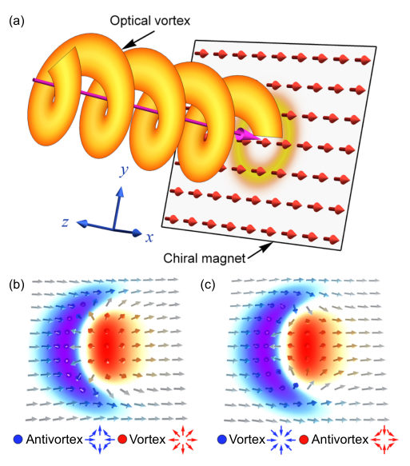
<figcaption class="paper-figure-caption"><b>Fig 1.</b> FIG. 1. (a) Schematic illustration of the model. An OV beam is incident on a chiral magnetic thin film. The spiral represents the he- lical phase front of the OV, the magenta arrow indicates its propaga- tion direction, and the red arrows denote the initial uniform in-plane magnetization of the chiral magnet. (b) Magnetic configuration of an asymmetric bimeron. (c) Magnetic configuration of an asymmetric antibimeron. The sketches below panels (b) and (c) show the vortex- antivortex pair forming each spin texture.</figcaption>
</figure>
<figure class="paper-figure-card">
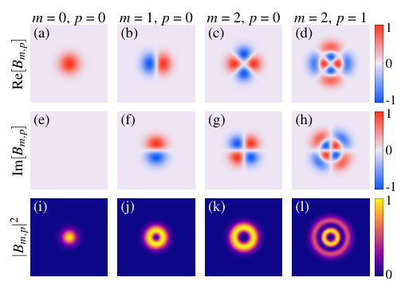
<figcaption class="paper-figure-caption"><b>Fig 2.</b> FIG. 2. Normalized spatial profiles of LG modes at the focal plane (z = 0). The first row, panels (a) to (d), shows the real part Re[Bm,p] of the OV magnetic field. The second row, panels (e) to (h), shows its imaginary part Im[Bm,p]. The third row, panels (i) to (l), shows the corresponding intensity |Bm,p|2. The columns correspond to (m, p) = (0, 0), (1, 0), (2, 0), and (2, 1), respectively. The fields and intensities are normalized to their respective peak values, with the color scales indicated by the colorbars.</figcaption>
</figure>
<figure class="paper-figure-card">
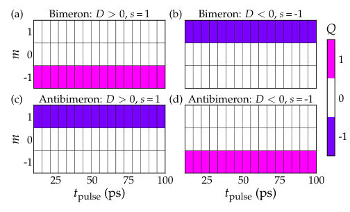
<figcaption class="paper-figure-caption"><b>Fig 3.</b> FIG. 3. Nucleation outcome diagrams for circularly polarized OVs. The color maps show the topological charge Q as a function of the pulse duration tpulse and the OAM m. Panels (a) and (b) correspond to the Cnv-symmetric system hosting asymmetric bimerons for (a) D &gt; 0 with beam polarization s = 1, and (b) D &lt; 0 with s = −1. Panels (c) and (d) correspond to the D2d-symmetric system hosting asymmetric antibimerons for (c) D &gt; 0 with s = 1, and (d) D &lt; 0 with s = −1.</figcaption>
</figure>
<figure class="paper-figure-card">
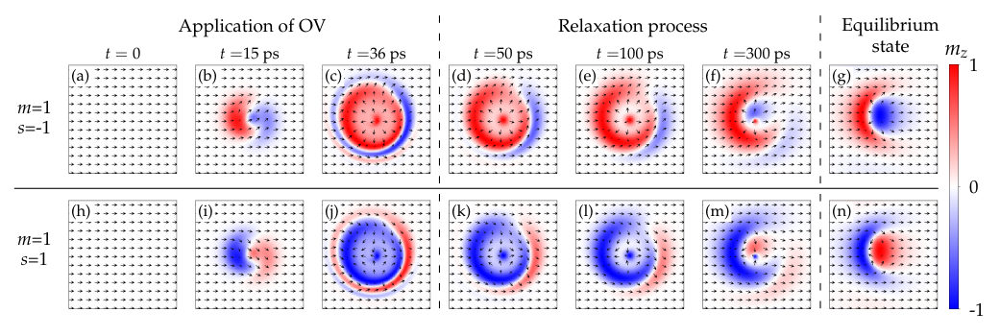
<figcaption class="paper-figure-caption"><b>Fig 4.</b> FIG. 4. Nucleation of single in-plane topological spin textures in a chiral FM driven by circularly polarized OVs. The OV pulse carries OAM index m = 1 and has a total duration of tpulse = 36.5 ps. The top row [panels (a)–(g)] corresponds to right-handed circular polarization (s = −1), leading to the nucleation of an asymmetric bimeron. The bottom row [panels (h)–(n)] corresponds to left-handed circular polarization (s = 1), leading to the nucleation of an asymmetric antibimeron. Panels (a)–(c) and (h)–(j) show the magnetization dynamics during the OV pulse, while panels (d)–(f) and (k)–(m) show the subsequent relaxation after the pulse is switched off, with time reset to t = 0 at the start...</figcaption>
</figure>
<figure class="paper-figure-card">
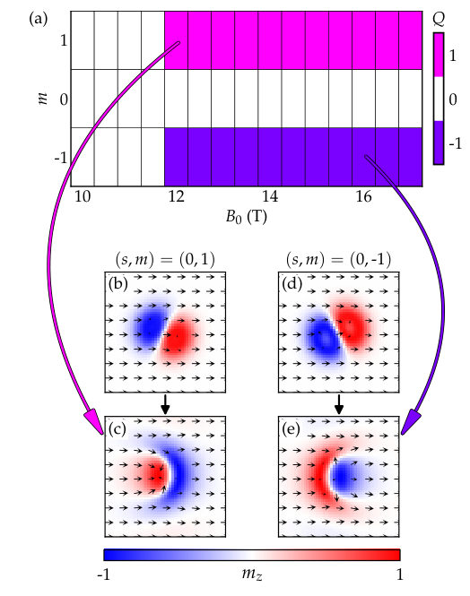
<figcaption class="paper-figure-caption"><b>Fig 5.</b> FIG. 5. (a) Nucleation outcome diagram for linearly polarized OVs. The color map shows the topological charge Q as a function of the OV magnetic-field amplitude coefficient B0 and OAM m. (b)–(e) Nucleation of asymmetric bimerons. Panels (b) and (d) show the magnetization states at t = 5 ps during the OV pulse for m = 1 and m = −1 at B0 = 12 T and B0 = 16 T, respectively. The corresponding equilibrium states after relaxation are shown in (c), with Q = 1, and in (e), with Q = −1. The color in panels (b)–(e) represents the out- of-plane magnetization component.</figcaption>
</figure>
</div>

<p><strong>Summary.</strong> This research demonstrates how structured light, specifically optical vortices, can be used to write precise, controllable topological spin textures in chiral magnetic films. By controlling the beam's orbital and spin angular momentum, researchers can deterministically encode these quantum optical properties into the magnetic topology, opening a new pathway for quantum-controlled spintronic devices.</p>
<p><strong>Why it may be interesting.</strong> This work bridges quantum optics (structured light, OAM) directly into condensed matter magnetism, providing a mechanism for non-invasive, quantum-number-controlled manipulation of magnetic topology, which is highly relevant for advanced spintronics.</p>
<details>
<summary>Detailed structure</summary>
<p><strong>Main problem.</strong> The paper investigates the deterministic and local writing of in-plane topological spin textures (like bimerons and antibimerons) within chiral ferromagnetic thin films using structured light, specifically optical vortices (OVs).</p>
<p><strong>Main result.</strong> Structured light provides a versatile route for topology-selective writing, where the optical quantum numbers (OAM, SAM) can be directly encoded into the topological charge (Q) of the resulting magnetic texture.</p>
<p><strong>Method.</strong> The study employs micromagnetic simulations to model the time evolution of magnetization dynamics driven by pulsed Laguerre-Gaussian optical vortex fields.</p>
<p><strong>Model / system.</strong> The system is an ultrathin ferromagnetic film exhibiting chiral magnetic properties, governed by a free energy functional and simulated using the Landau-Lifshitz-Gilbert equation. The driving force is a time-dependent magnetic field derived from the structured light.</p>
<p><strong>Key observables.</strong> Topological charge (Q), magnetic texture morphology (bimerons/antibimerons), and the dependence of these on optical quantum numbers (m, p, polarization s).</p>
<p><strong>Important parameters / regimes.</strong> Material parameters include $M_s$, $A$, $D$, and $K_x$; simulation parameters involve beam waist ($W$), pulse duration ($t_{	ext{pulse}}$), and OAM ($m$).</p>
<p><strong>Assumptions / limitations.</strong> The analysis relies on the paraxial approximation for the OV field and assumes the dynamics are governed by the LLG equation under the influence of the structured light pulse.</p>
<p><strong>Figures summary.</strong> Figures illustrate the schematic of OV incidence on a chiral film, the spatial profiles of LG modes, and time-evolution maps showing the nucleation of single or clustered topological textures corresponding to specific input optical parameters.</p>
<p><strong>Paper structure.</strong> The paper builds from defining the physical model and Hamiltonian, detailing the simulation protocol (three-stage writing process), presenting results for specific polarization/OAM combinations, and concluding with a general framework for topology-selective writing.</p>
</details>
<details>
<summary>Abstract</summary>
<p>Structured light offers a powerful means of controlling light-matter interactions through multiple tunable optical degrees of freedom. Using micromagnetic simulations, we investigate the nucleation of asymmetric bimerons and antibimerons by pulsed Laguerre-Gaussian optical vortices in chiral ferromagnetic thin films with $C_{nv}$ and $D_{2d}$ symmetries, respectively. For optical vortices with orbital angular momentum (OAM) $|m|=1$, circularly polarized beams deterministically nucleate a single bimeron or antibimeron via the interplay of spin angular momentum, OAM, and magnetic chirality, whereas linearly polarized beams produce textures whose topological charge directly follows the OAM ($Q=m$). Optical vortices with OAM $|m|>1$ nucleate clusters and other configurations composed of multiple spin textures, whose morphology and topological charge depend sensitively on the optical quantum numbers and pulse parameters. These findings reveal a route to topology-selective writing through the encoding of optical quantum numbers into distinct in-plane topological magnetic states.</p>
</details>
<p><sub><a href="#top">↑ back to top</a></sub></p>

<p><a id="paper-2608.24023"></a></p>
<h3 id="scattering-induced-magnon-layer-hall-transport-beyond-band-geometry"><a href="http://arxiv.org/abs/2608.24023v1">Scattering-Induced Magnon Layer-Hall Transport beyond Band Geometry</a></h3>
<p><strong>Authors:</strong> Zhiping Xue, Zhoujian Sun, Xiyin Ye, Lei Zhang, Tao Yu<br>
<strong>Type:</strong> theory · <strong>Category:</strong> other · <strong>PDF:</strong> <a href="https://arxiv.org/pdf/2608.24023v1">https://arxiv.org/pdf/2608.24023v1</a><br>
<strong>Analysis basis:</strong> full PDF text, analyzed in chunks
<strong>Topic relevance:</strong> <code>Keldysh / 2PI / non-Gaussian methods</code> <strong>2/5</strong> · <code>analog quantum simulation</code> <strong>2/5</strong> · <code>methods for driven-dissipative</code> <strong>2/5</strong> · <code>correlated / nonlocal dissipation</code> <strong>1/5</strong> · <code>driven-dissipative phase transition</code> <strong>1/5</strong> · <code>non-equilibrium universality</code> <strong>1/5</strong></p>
<div class="figure-strip-hint">↔ Scroll figures horizontally</div>
<div class="paper-figures-scroll">
<figure class="paper-figure-card">
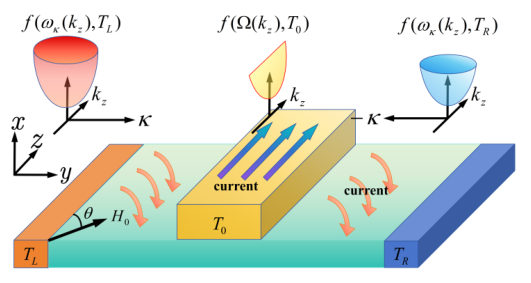
<figcaption class="paper-figure-caption"><b>Fig 1.</b> FIG. 1. Magnon layer-Hall transport driven by dipolar scat- tering. The hybrid system consists of a magnetic nanowire (width w, thickness d) placed atop a magnetic film (thickness s). The magnetization of the film (nanowire) is tilted by an angle θ (˜θ) relative to the wire ˆz-axis. The film is sandwiched between two thermal reservoirs at temperatures TL and TR, establishing a longitudinal temperature gradient ∇T ∥ˆy. The wire acts as a local thermal reservoir at T0 = (TL + TR)/2.</figcaption>
</figure>
<figure class="paper-figure-card">
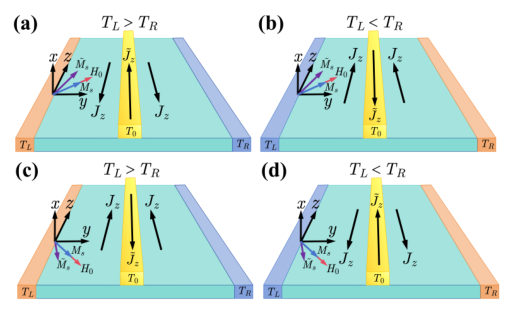
<figcaption class="paper-figure-caption"><b>Fig 2.</b> FIG. 3. Manipulation of layer Hall current by the temperature gradient direction and the external field H0 that changes the directions θ and ˜θ of Ms and ˜ Ms.</figcaption>
</figure>
<figure class="paper-figure-card">
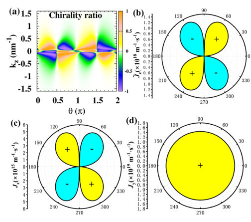
<figcaption class="paper-figure-caption"><b>Fig 3.</b> FIG. 2. Transverse vs. longitudinal magnon current in the film and wire when biased by an applied field µ0H0 = 0.05 T in different directions, where the system resides in a sta- ble configuration ˜θ ≈θ. (a): dependence of chirality ratio η(κΩ, kz) on the wave vector kz and field direction θ. (b) and (c): transverse currents in the wire ( ˜Jz) and film (Jz) under different magnetization configurations. (d): longitudinal cur- rent (Jy) in the film versus the external field direction.</figcaption>
</figure>
<figure class="paper-figure-card">
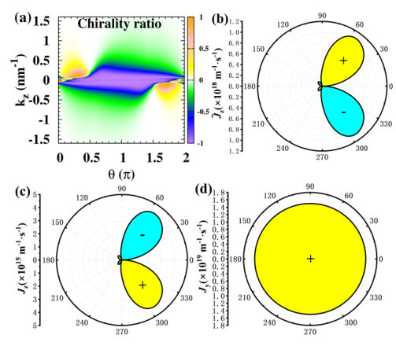
<figcaption class="paper-figure-caption"><b>Fig 4.</b> FIG. 4. Magnon current density in the wire and film when bi- ased by a weak applied field µ0H0 = 0.01 T, where metastable states occur when θ ∈(90◦, 270◦). (a) plots the dependence of the chirality ratio on the wave vector (kz) and the field direction (θ). (b) and (c): switch on and off of the transverse Hall current in the wire ˜Jz and film Jz by the direction of the external magnetic field. (d): longitudinal magnon current Jy in the film, weakly affected by the external field.</figcaption>
</figure>
</div>

<p><strong>Summary.</strong> This work introduces a novel, scattering-driven mechanism for the layer Hall effect in magnons, bypassing the need for topological band structures. By analyzing a nanowire on a magnetic film, the authors show that non-reciprocal dipolar scattering under a temperature gradient generates measurable transverse thermal Hall currents. This provides a robust, field-tunable pathway for realizing this effect in conventional magnetic materials.</p>
<p><strong>Why it may be interesting.</strong> While the primary focus is condensed matter magnetism, the development of a scattering-theory approach to engineer directional transport (thermal/spin currents) based on symmetry breaking (non-reciprocity) is highly relevant to open quantum systems and engineered quantum transport phenomena.</p>
<details>
<summary>Detailed structure</summary>
<p><strong>Main problem.</strong> To establish a fundamentally distinct mechanism for the layer Hall effect (LHE) in bosonic excitations, specifically magnons, that is driven by non-reciprocal dipolar scattering rather than geometric Berry curvature effects.</p>
<p><strong>Main result.</strong> The study predicts a magnon LHE where a longitudinal temperature gradient drives opposite transverse thermal Hall currents, yielding a sizable Hall angle ($\sim 6^\circ$) in conventional magnetic heterostructures.</p>
<p><strong>Method.</strong> The authors employ a microscopic scattering theory approach, deriving hybridization coefficients and analyzing the resulting magnon current densities under a temperature gradient.</p>
<p><strong>Model / system.</strong> The system modeled is a hybrid chiral architecture: a magnetic nanowire placed atop a magnetic film, interacting via an interlayer dipolar coupling. The analysis focuses on the magnon excitations in this coupled system.</p>
<p><strong>Key observables.</strong> Transverse thermal Hall currents ($    ilde{J}_z, J_z$), the Hall angle ($\sim 6^\circ$), and the dependence of currents on the external magnetic field orientation ($  heta$).</p>
<p><strong>Important parameters / regimes.</strong> The non-reciprocal nature of the dipolar coupling ($g_{\kappa}(kz)$), the applied longitudinal temperature gradient ($
abla T$), and the external magnetic field strength ($\mu_0H_0$).</p>
<p><strong>Assumptions / limitations.</strong> The analysis assumes the ballistic regime (micrometer length scales) and attributes the effect to the non-reciprocity of the dipolar coupling, thereby bypassing the need for topological engineering.</p>
<p><strong>Figures summary.</strong> Figure 1 illustrates the physical setup: a magnetic nanowire on a magnetic film subjected to a longitudinal temperature gradient, with magnetization tilted by angles $    heta$ and $ ilde{   heta}$.</p>
<p><strong>Paper structure.</strong> The paper builds from identifying the limitations of Berry curvature mechanisms to developing a scattering-theory framework based on non-reciprocal dipolar coupling, calculating the resulting transverse currents, and demonstrating the tunability and magnitude of the effect.</p>
</details>
<details>
<summary>Abstract</summary>
<p>The layer Hall effect has been exclusively attributed to layer-locked Berry curvature, posing a fundamental barrier to its realization in conventional magnets. Here we report a fundamentally distinct layer Hall effect for bosonic excitations, i.e., magnons, which originates solely from non-reciprocal dipolar scattering at heterointerfaces, thereby decoupling the phenomenon from geometric-phase mechanisms. Using a microscopic scattering theory, we demonstrate that a longitudinal temperature gradient drives opposite transverse thermal Hall currents in a nanowire atop a magnetic film, with the direction fully reconfigurable by the applied magnetic field. The effect yields a significant Hall angle of $\sim 6^{\circ}$ in conventional magnetic heterostructures, eliminating the need for topological engineering. Our findings establish a scattering-driven paradigm for layer Hall effect, extendable to ferrons and polar phonons, and predict a Hall response that is readily detectable in conventional magnetic heterostructures.</p>
</details>
<p><sub><a href="#top">↑ back to top</a></sub></p>

<p><a id="paper-2608.24581"></a></p>
<h3 id="intervalley-magnetotrions-tunable-by-electric-and-magnetic-fields-in-buckled-two-dimensional-materials"><a href="http://arxiv.org/abs/2608.24581v1">Intervalley Magnetotrions Tunable by Electric and Magnetic Fields in Buckled Two-Dimensional Materials</a></h3>
<p><strong>Authors:</strong> Roman Ya. Kezerashvili, Shalva M. Tsiklauri, Anastasia Spiridonova<br>
<strong>Type:</strong> theory · <strong>Category:</strong> other · <strong>PDF:</strong> <a href="https://arxiv.org/pdf/2608.24581v1">https://arxiv.org/pdf/2608.24581v1</a><br>
<strong>Analysis basis:</strong> full PDF text, analyzed in chunks
<strong>Topic relevance:</strong> <code>analog quantum simulation</code> <strong>2/5</strong> · <code>Keldysh / 2PI / non-Gaussian methods</code> <strong>1/5</strong></p>
<div class="figure-strip-hint">↔ Scroll figures horizontally</div>
<div class="paper-figures-scroll">
<figure class="paper-figure-card">
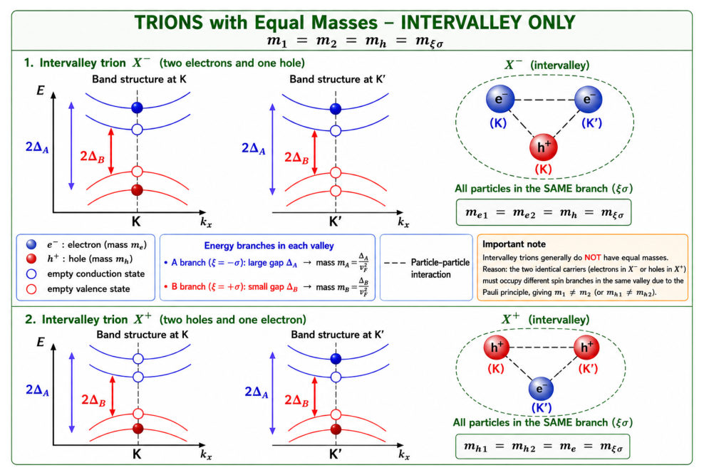
<figcaption class="paper-figure-caption"><b>Fig 1.</b> FIG. 1: (Color online) Schematic illustration of equal-mass intervalley trions in Xene monolayers. The upper and lower panels show negatively charged, X−, and positively charged, X+, trions, respectively. The band structures near the K and K′ valleys are shown together with the occupation of the conduction and valence bands. Although the constituent particles occupy different valleys (K and K′), they belong to the same valley-spin branch (ξσ), yielding equal effective masses me1 = me2 = mh = mξσ for X−and mh1 = mh2 = me = mξσ for X+. The corresponding band occupations and three-body configurations are illustrated together with the A- and B-branch energy gaps.</figcaption>
</figure>
<figure class="paper-figure-card">
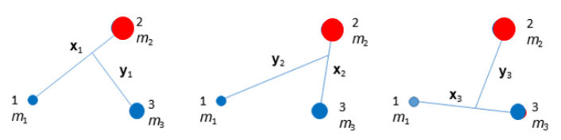
<figcaption class="paper-figure-caption"><b>Fig 2.</b> FIG. 2: (Color online) Schematics of partition trees of Jacobi coordinates when three charged particles have different masses.</figcaption>
</figure>
<figure class="paper-figure-card">
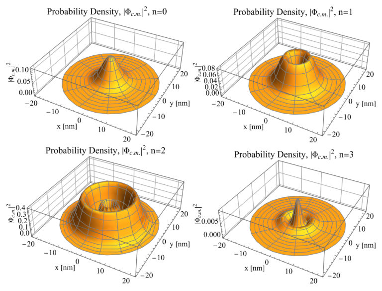
<figcaption class="paper-figure-caption"><b>Fig 3.</b> FIG. 3: (Color online) Three-dimensional plots of |Φc.m.|2 versus x and y of the the Center-of-Mass of three the same mass fermions in magnetic field B = 50 T and electric field E⊥= 0.5 V/˚Ain different states.</figcaption>
</figure>
<figure class="paper-figure-card">
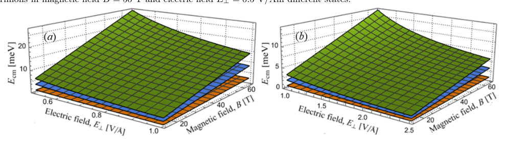
<figcaption class="paper-figure-caption"><b>Fig 4.</b> FIG. 4: (Color online) Center-of-mass Landau energy surfaces of the X∓trions in silicene monolayer for the lowest three Landau levels as functions of the external electric and magnetic fields. Panels (a) and (b) show the results for the electric fields interval 0.5 ≤E⊥≤1.0 V/˚Aand 1.0 ≤E⊥≤2.5 V/˚A, respectively.</figcaption>
</figure>
<figure class="paper-figure-card">
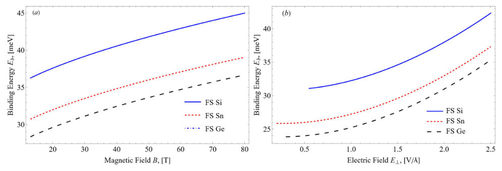
<figcaption class="paper-figure-caption"><b>Fig 5.</b> FIG. 5: (Color online) Dependence of the binding energy of intervalley X∓magnetotrions in free-standing silicene, germanene, and stanene. (a) Binding energy as a function of the magnetic field B for a fixed perpendicular electric field E⊥= 2 V/˚A. (b) Binding energy as a function of the perpendicular electric field E⊥for a fixed magnetic field B = 40 T. The results demonstrate that both magnetic confinement and the electric-field-induced modification of the effective carrier masses enhance the trion binding energy.</figcaption>
</figure>
</div>

<p><strong>Summary.</strong> This work theoretically models intervalley magnetotrions in 2D materials like silicene and stanene under combined electric and magnetic fields. It establishes that the system exhibits an exact separation of center-of-mass and internal dynamics when carrier masses are equal. This allows for independent, field-tunable control over both the collective motion (Landau levels) and the binding energy of the trion complex.</p>
<p><strong>Why it may be interesting.</strong> The independent tunability of collective (c.m.) and internal degrees of freedom by external fields provides a powerful platform for engineering quantum states, relevant to quantum optics and open quantum systems.</p>
<details>
<summary>Detailed structure</summary>
<p><strong>Main problem.</strong> The paper develops a theoretical framework to study intervalley magnetotrions in buckled two-dimensional materials under external electric and magnetic fields.</p>
<p><strong>Main result.</strong> It shows that the center-of-mass and internal motions of these trions can separate exactly under the condition of equal electron and hole effective masses. Furthermore, the trion binding energy is found to increase monotonically with both applied fields.</p>
<p><strong>Method.</strong> The analysis uses the effective-mass approximation to formulate the three-particle Schrödinger equation, solving the center-of-mass motion via a harmonic oscillator Hamiltonian and the internal motion using the hyperspherical harmonics method.</p>
<p><strong>Model / system.</strong> The system involves trions (three-particle bound states) in Xene monolayers (silicene, germanene, stanene), modeled with the Rytova–Keldysh interaction potential, and subjected to perpendicular electric and magnetic fields.</p>
<p><strong>Key observables.</strong> Trion binding energy, quantized Landau surface energies, and the separation of center-of-mass and internal motion.</p>
<p><strong>Important parameters / regimes.</strong> High-magnetic-field regime ($B \gtrsim 15 	ext{ T}$), electric field ($E_\perp$), and the condition of equal effective masses ($m_{e1} = m_{e2} = m_h$).</p>
<p><strong>Assumptions / limitations.</strong> The effective-mass approximation is employed, and the analysis is restricted to the high-magnetic-field regime.</p>
<p><strong>Figures summary.</strong> Figure 1 schematically illustrates equal-mass intervalley trions in Xene monolayers, detailing the conditions for mass equality and showing the associated band structures.</p>
<p><strong>Paper structure.</strong> The paper first establishes the theoretical framework for the three-particle system, then analyzes the center-of-mass motion leading to tunable Landau states, and finally investigates the internal dynamics using advanced quantum mechanical methods.</p>
</details>
<details>
<summary>Abstract</summary>
<p>We develop a theoretical framework for intervalley magnetotrions in buckled two-dimensional materials, including silicene, germanene, and stanene, subjected to perpendicular electric and magnetic fields. Within the effective-mass approximation, the three-particle Schrödinger equation is formulated with the Rytova--Keldysh interaction potential and analyzed in the high-magnetic-field regime. We demonstrate that intervalley trions with equal electron and hole effective masses constitute an exceptional case for which the center-of-mass and internal motions separate exactly. The center-of-mass motion is governed by a two-dimensional harmonic-oscillator Hamiltonian, leading to quantized Landau states whose energies form electrically tunable Landau surfaces controlled by the magnetic field and the electric-field dependence of the carrier effective masses. The internal motion is investigated by solving the three-body Schrödinger equation within the framework of the hyperspherical harmonics method. Numerical calculations reveal that the trion binding energy increases monotonically with both magnetic and electric fields owing to the combined effects of magnetic confinement and electric-field-induced enhancement of the effective masses. The strongest binding is obtained for silicene, followed by stanene and germanene. The present work provides a unified description of both the collective center-of-mass motion and the internal dynamics of magnetotrions in Xene monolayers, demonstrating that both degrees of freedom can be independently manipulated by external electric and magnetic fields.</p>
</details>
<p><sub><a href="#top">↑ back to top</a></sub></p>

<p><a id="paper-2608.24455"></a></p>
<h3 id="electronic-cooling-of-a-tiw-alloy-normal-metal-island-using-nb-based-superconducting-tunnel-junctions"><a href="http://arxiv.org/abs/2608.24455v1">Electronic cooling of a TiW alloy normal-metal island using Nb-based superconducting tunnel junctions</a></h3>
<p><strong>Authors:</strong> Joel Hätinen, Renan Pires Loreto, Arvind Kumar, Jani Taskinen, Mika Prunnila<br>
<strong>Type:</strong> both · <strong>Category:</strong> statistical mechanics · <strong>PDF:</strong> <a href="https://arxiv.org/pdf/2608.24455v1">https://arxiv.org/pdf/2608.24455v1</a><br>
<strong>Analysis basis:</strong> full PDF text, analyzed in chunks
<strong>Topic relevance:</strong> <code>Keldysh / 2PI / non-Gaussian methods</code> <strong>1/5</strong> · <code>correlated / nonlocal dissipation</code> <strong>1/5</strong> · <code>driven-dissipative phase transition</code> <strong>1/5</strong> · <code>methods for driven-dissipative</code> <strong>1/5</strong> · <code>non-equilibrium universality</code> <strong>1/5</strong></p>
<div class="figure-strip-hint">↔ Scroll figures horizontally</div>
<div class="paper-figures-scroll">
<figure class="paper-figure-card">
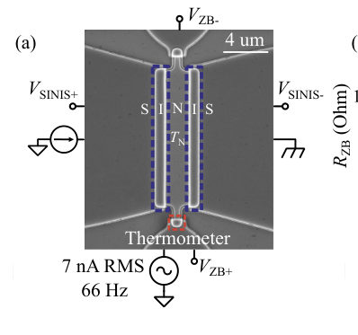
<figcaption class="paper-figure-caption"><b>Fig 1.</b> Fig. 1 (a): Scanning electron micrograph of the mesoscopic cooler device with the experimental wiring. (b): Zero-bias resistance of the top junction with respect to the bath temperature. Linear interpolation between the data points is used as a thermometer calibration.</figcaption>
</figure>
<figure class="paper-figure-card">
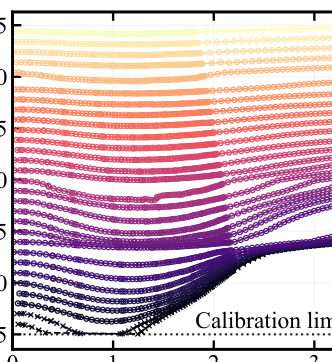
<figcaption class="paper-figure-caption"><b>Fig 2.</b> Fig. 2 Cooling performance of the device. (a): Normal-metal electron temperature measured using the tunnel-junction thermometer as a function of voltage across the SINIS cooler. The operating bath temperature for each curve is recovered at zero cooler bias, i.e., TN = TBath at VSINIS = 0.(b): Absolute cooling from the bath with a maximum of 217 mK at TBath = 1.7 K. (c): Relative cooling from the bath with a maximum of 27% at TBath = 0.7 K.</figcaption>
</figure>
</div>

<p><strong>Summary.</strong> This paper reports on the successful demonstration of electronic cooling in a TiW normal-metal island using superconducting tunnel junctions (NIS coolers). By measuring the temperature drop and characterizing the cooling power, the authors validate the use of these junctions for cryogenic applications. The work provides quantitative data on cooling efficiency and discusses discrepancies between theory and experiment regarding the optimal operating voltage.</p>
<p><strong>Why it may be interesting.</strong> The work explores non-equilibrium thermodynamics and energy transport in mesoscopic superconducting circuits, which touches upon non-equilibrium statistical mechanics and heat engine concepts.</p>
<details>
<summary>Detailed structure</summary>
<p><strong>Main problem.</strong> The paper demonstrates and characterizes the electronic cooling effect achieved in a normal-metal island using superconducting tunnel junctions.</p>
<p><strong>Main result.</strong> Significant electronic cooling, up to 217 mK absolutely, is observed in the TiW-based normal-metal island, confirming the viability of NIS junctions for cryogenic cooling applications.</p>
<p><strong>Method.</strong> The study combines electrical measurements (I-V curves, temperature sensing) with theoretical modeling based on energy-selective quasiparticle tunneling.</p>
<p><strong>Model / system.</strong> The physical system is a mesoscopic NIS tunnel junction stack (TiW-Al/AlOx/Nb), where cooling arises from the energy-selective tunneling of quasiparticles between the normal metal and the superconductor.</p>
<p><strong>Key observables.</strong> Normal-metal electron temperature ($T_N$), absolute and relative temperature reduction ($\delta T_N$), and the optimal bias voltage ($V_{Opt}$).</p>
<p><strong>Important parameters / regimes.</strong> Operating temperature range (0.6 K to 3.5 K), maximum cooling values (217 mK, 27%), and superconducting energy gaps ($\Delta$).</p>
<p><strong>Assumptions / limitations.</strong> The analysis relies on single-particle tunneling expressions and assumes that fitted junction parameters are temperature-independent, although discrepancies suggest otherwise.</p>
<p><strong>Figures summary.</strong> Figures show SEM images, $T_N$ vs. voltage curves, and plots detailing the maximum absolute and relative cooling performance as a function of bath temperature.</p>
<p><strong>Paper structure.</strong> The paper proceeds by demonstrating the cooling effect, calibrating the thermometer, quantifying the cooling performance across a temperature range, and finally comparing the measured optimal voltage against ideal BCS theory predictions.</p>
</details>
<details>
<summary>Abstract</summary>
<p>TiW thin films remain non-superconducting down to millikelvin temperatures and are compatible with large-scale CMOS manufacturing, making them attractive for cryogenic and quantum tunnel-junction devices, such as normal-metal-insulator-superconductor (NIS) thermal sensors and electron refrigerators. We demonstrate significant electronic cooling of a TiW-based normal-metal island and electron thermometry by using TiW-Al-AlOx-Nb NIS tunnel-junction stacks. The NIS thermometer enables local electron temperature measurements from 0.5 to 8.32 K. NIS cooling is observed between 0.6 and 3.5 K, with maximum absolute and relative temperature reductions of 217 mK and 27%, respectively. Calculations using tunnel-junction parameters obtained independently from current-voltage fits reproduce the measured optimum-voltage scale, which lies substantially below the ideal low-temperature prediction.</p>
</details>
<p><sub><a href="#top">↑ back to top</a></sub></p>

<p><a id="paper-2608.23964"></a></p>
<h3 id="kernel-dependent-pattern-formation-in-a-population-model-with-nonlocal-facilitation-and-competition"><a href="http://arxiv.org/abs/2608.23964v1">Kernel-Dependent Pattern Formation in a Population Model with Nonlocal Facilitation and Competition</a></h3>
<p><strong>Authors:</strong> Olivia Clifton, Stephanie Dodson, Daniel B. Cooney<br>
<strong>Type:</strong> theory · <strong>Category:</strong> statistical mechanics · <strong>PDF:</strong> <a href="https://arxiv.org/pdf/2608.23964v1">https://arxiv.org/pdf/2608.23964v1</a><br>
<strong>Analysis basis:</strong> full PDF text, analyzed in chunks
<strong>Topic relevance:</strong> <code>analog quantum simulation</code> <strong>1/5</strong> · <code>correlated / nonlocal dissipation</code> <strong>1/5</strong> · <code>driven-dissipative phase transition</code> <strong>1/5</strong> · <code>methods for driven-dissipative</code> <strong>1/5</strong> · <code>non-equilibrium universality</code> <strong>1/5</strong></p>
<div class="figure-strip-hint">↔ Scroll figures horizontally</div>
<div class="paper-figures-scroll">
<figure class="paper-figure-card">
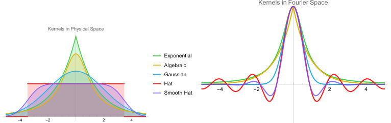
<figcaption class="paper-figure-caption"><b>Fig 1.</b> Figure 1: Plots of example kernels with σc = 2. Left, plots of kernels in physical space. Right, plots of kernels in Fourier space.</figcaption>
</figure>
<figure class="paper-figure-card">
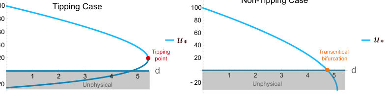
<figcaption class="paper-figure-caption"><b>Fig 2.</b> Figure 2: Plots of uniform solutions u as the death rate d varies (negative solutions are unphysical), in each of 2 cases. (a) Example of tipping case, with parameter values from Figure 3. (b) Example of non-tipping case, with f0 = 0.005 and all other parameters the same as in panel (a).</figcaption>
</figure>
<figure class="paper-figure-card">
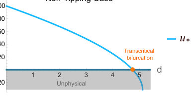
<figcaption class="paper-figure-caption"><b>Fig 3.</b> Figure 3: Values of parameters used in numerics in Section 5</figcaption>
</figure>
<figure class="paper-figure-card">
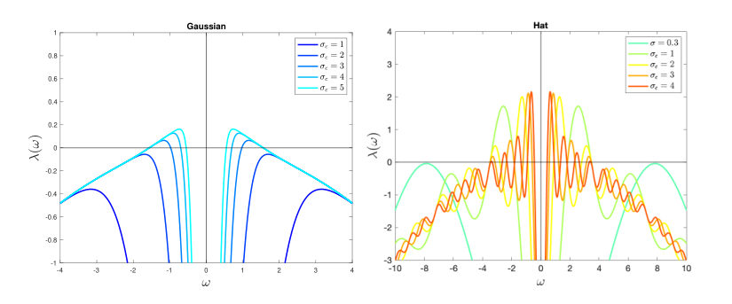
<figcaption class="paper-figure-caption"><b>Fig 4.</b> Figure 4: Plots of the dispersion relations for the Gaussian kernel (left) and hat kernel (right) for various values of σc, with all other parameters from Figure 3.</figcaption>
</figure>
<figure class="paper-figure-card">
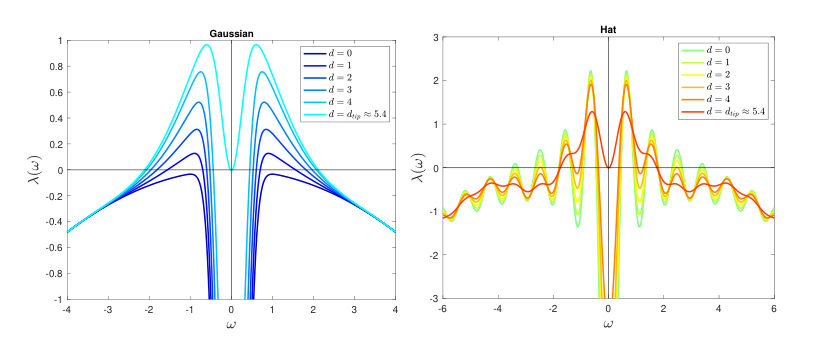
<figcaption class="paper-figure-caption"><b>Fig 5.</b> Figure 5: Plots of the dispersion relation for the Gaussian kernel (left) and hat kernel (right) for various values of d, with all other parameters from Figure 3. Note that λ(0) is negative except at the tipping point when it equals 0, as expected since the uniform state undergoes a fold bifurcation.</figcaption>
</figure>
</div>

<p><strong>Summary.</strong> This paper analyzes a nonlocal reaction-diffusion model for population dynamics to study pattern formation influenced by the specific mathematical form of interaction kernels. It finds that the kernel choice dictates the system's resilience, demonstrating a 'Turing-before-Tipping' mechanism for some kernels but not others. This highlights how nonlocal interactions fundamentally alter the stability and pattern-forming capabilities of complex ecological systems.</p>
<p><strong>Why it may be interesting.</strong> While focused on ecology, the mathematical framework of pattern formation, bifurcation analysis, and resilience mechanisms in non-equilibrium systems shares theoretical overlap with pattern formation in quantum many-body systems.</p>
<details>
<summary>Detailed structure</summary>
<p><strong>Main problem.</strong> The paper investigates how the choice of nonlocal interaction kernel affects pattern formation and persistence in a population model incorporating nonlocal competition and facilitation.</p>
<p><strong>Main result.</strong> The choice of kernel creates a dichotomy in pattern behavior; Gaussian-type kernels show robust 'Turing-before-Tipping' resilience, while hat-type kernels do not exhibit this behavior regarding the death rate.</p>
<p><strong>Method.</strong> The study employs center manifold analysis and numerical continuation methods to analyze pattern-forming bifurcations and pattern stability far from onset.</p>
<p><strong>Model / system.</strong> It uses a single-species reaction-diffusion model for population density, incorporating nonlocal facilitation and competition terms governed by various kernels (Gaussian, exponential, hat, etc.).</p>
<p><strong>Key observables.</strong> Pattern formation/bifurcation, pattern persistence past the tipping point, and early warning signs for population extinction.</p>
<p><strong>Important parameters / regimes.</strong> The death rate ($d$) and the relative spatial scale of competition ($\sigma_c$) to facilitation ($\sigma_f$) are key bifurcation parameters.</p>
<p><strong>Assumptions / limitations.</strong> The analysis fixes the facilitation scale ($\sigma_f = 1$), and the study compares kernels based on whether their Fourier transforms are non-negative (Gaussian-type) or take on negative values (Hat-type).</p>
<p><strong>Figures summary.</strong> The notes reference figures illustrating example kernels in physical and Fourier space, and plots showing uniform solutions versus the death rate ($d$) for tipping (fold) and non-tipping (transcritical) bifurcations.</p>
<p><strong>Paper structure.</strong> The paper analyzes the model via center manifold expansion to determine pattern-forming bifurcations, followed by numerical continuation methods to study pattern stability and the 'Turing-before-Tipping' phenomenon.</p>
</details>
<details>
<summary>Abstract</summary>
<p>Spatial patterns, such as those in dryland vegetation models, have historically been studied   in systems of reaction-diffusion systems with pattern onset via a Turing bifurcation from a spatially uniform state. More recently, spatial patterns have been considered in models that incorporate spatially extended interactions via nonlocal interaction kernels. It remains largely underexplored if and how the choice of nonlocal interaction kernel contributes to differences in pattern formation and persistence, particularly in models that contain competition and facilitation. Here, we investigate spatial patterns in a reaction-diffusion model for a single species that includes nonlocal competition and facilitation processes; Gaussian, exponential, algebraic, hat, and smooth hat kernels are considered as specific examples. Via a center manifold analysis, and using the relative spatial scale of competition to facilitation and the death rate as bifurcation parameters, we identify that the choice of kernel has impacts on the pattern forming bifurcation. Bifurcations using the Gaussian, exponential, and algebraic kernels largely follow expectations of Turing patterns, but patterns in the hat and smooth hat kernels can form even when the scale of competition is less than that of facilitation. The dynamics of patterns far from onset are investigated via numerical continuation methods. The model produces the so-called "Turing-before-Tipping" phenomenon demonstrating that the arrangement into spatial patterns is an effective resilience mechanism against harsh conditions. Again, there is a kernel-dependent dichotomy in pattern behavior. Early warning signs for population extinction are observed with the Gaussian, exponential, and algebraic kernels, but not under the hat or smooth hat cases.</p>
</details>
<p><sub><a href="#top">↑ back to top</a></sub></p>

<p><a id="paper-2608.23832"></a></p>
<h3 id="spectrally-programmable-spin-polarized-photocurrents-in-wsemath1100math-nipsmath1101math-magnetic-van-der-waals-heterostructures"><a href="http://arxiv.org/abs/2608.23832v1">Spectrally Programmable Spin-Polarized Photocurrents in WSe$_2$-NiPS$_3$ Magnetic van der Waals Heterostructures</a></h3>
<p><strong>Authors:</strong> Rajesh Kumar Yadav, Michal Poplinger, Adi Levi, Adi Harchol, Nirman Chakraborty, Thomas Brumme, Thomas Heine, Efrat Lifshitz, Doron Naveh<br>
<strong>Type:</strong> both · <strong>Category:</strong> other · <strong>PDF:</strong> <a href="https://arxiv.org/pdf/2608.23832v1">https://arxiv.org/pdf/2608.23832v1</a><br>
<strong>Analysis basis:</strong> full PDF text, analyzed in chunks
<strong>Topic relevance:</strong> <code>analog quantum simulation</code> <strong>1/5</strong> · <code>driven-dissipative phase transition</code> <strong>1/5</strong> · <code>interference shaping light</code> <strong>1/5</strong> · <code>quantum measurements</code> <strong>1/5</strong> · <code>quantum optics experiment</code> <strong>1/5</strong></p>
<div class="figure-strip-hint">↔ Scroll figures horizontally</div>
<div class="paper-figures-scroll">
<figure class="paper-figure-card">
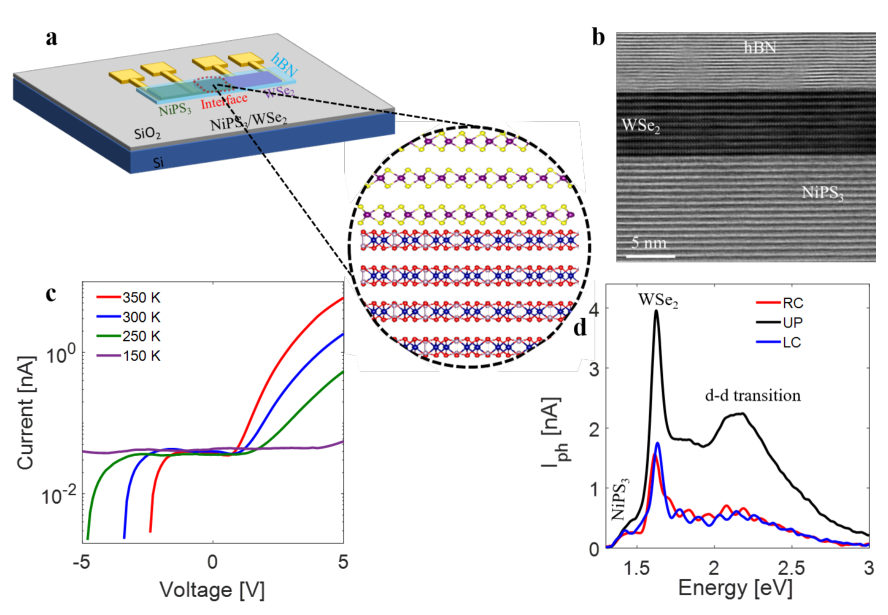
<figcaption class="paper-figure-caption"><b>Fig 1.</b> Figure 1. Heterostructure p-n diode of WSe2 and NiPS3. a) schematic description of the device, the top layer represents</figcaption>
</figure>
<figure class="paper-figure-card">
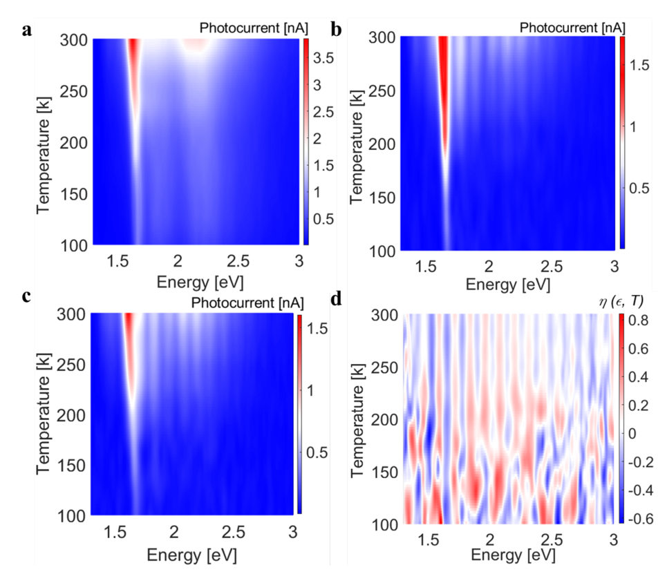
<figcaption class="paper-figure-caption"><b>Fig 2.</b> Figure 2. Temperature (100-300 K) dependent photocurrent spectra. a–c) Photocurrent spectrum as a function of</figcaption>
</figure>
<figure class="paper-figure-card">
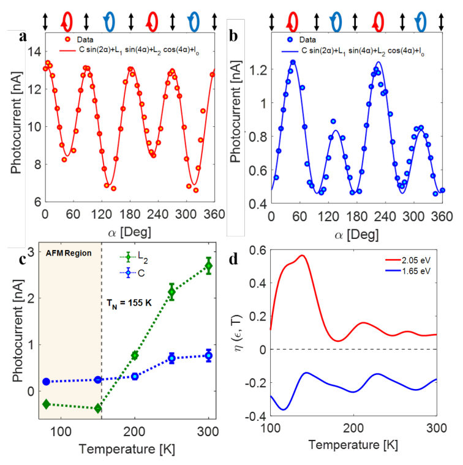
<figcaption class="paper-figure-caption"><b>Fig 3.</b> Figure 3. Temperature (80-300 K) dependent Photogalvanic response at 45º oblique incidence. a, b) Photocurrent</figcaption>
</figure>
<figure class="paper-figure-card">

<figcaption class="paper-figure-caption"><b>Fig 4.</b> Figure 3 displays the monochromatic photogalvanic measurement with a He-Ne laser (1.96 eV)</figcaption>
</figure>
<figure class="paper-figure-card">
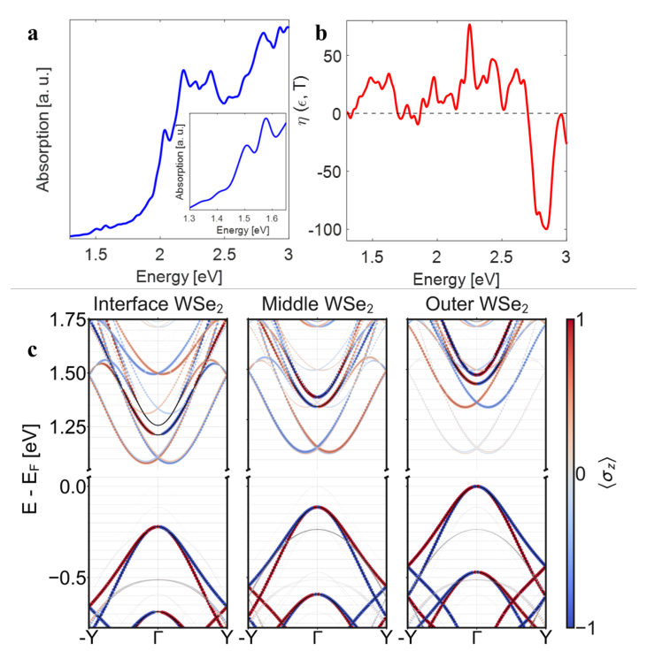
<figcaption class="paper-figure-caption"><b>Fig 5.</b> Figure 4. Calculated electronic structure of WSe2-NiPS3 interface. a) Calculated absorption spectrum of the</figcaption>
</figure>
</div>

<p><strong>Summary.</strong> This work introduces a novel opto-spintronic platform using a $    ext{WSe}_2- ext{NiPS}_3$ van der Waals heterostructure. By using circularly polarized light, the researchers generate highly spin-polarized photocurrents. Crucially, they show that the spin polarization remains robust across the material's magnetic phase transition, establishing spectral tuning as a powerful, field-free control mechanism for spin-current generation.</p>
<p><strong>Why it may be interesting.</strong> The concept of using spectral tuning as a control knob for spin transport is highly relevant to open quantum systems and quantum optics, as it suggests a non-magnetic, purely optical method to manipulate spin states in solid-state devices.</p>
<details>
<summary>Detailed structure</summary>
<p><strong>Main problem.</strong> The core challenge addressed is the efficient generation and control of spin-polarized currents in semiconductors, overcoming limitations like impedance mismatch and the need for external magnetic fields.</p>
<p><strong>Main result.</strong> The authors demonstrate that spectral tuning of excitation light in a $    ext{WSe}_2- ext{NiPS}_3$ van der Waals heterostructure can generate robust, spectrally protected spin-polarized photocurrents without external magnetic fields.</p>
<p><strong>Method.</strong> The study combines experimental measurements (photocurrent, photogalvanic spectroscopy using circularly polarized light) with first-principles electronic structure calculations.</p>
<p><strong>Model / system.</strong> The physical system is a p-n diode heterostructure composed of the antiferromagnetic semiconductor $    ext{NiPS}_3$ and the semiconductor $    ext{WSe}_2$. The mechanism relies on interfacial hybridization and spin-layer locking induced by an electric field.</p>
<p><strong>Key observables.</strong> Photocurrent spectra ($    ext{I}$ vs. photon energy $\epsilon$), degree of photocurrent polarization ($\eta$), and the persistence of spin polarization across the magnetic phase transition.</p>
<p><strong>Important parameters / regimes.</strong> Temperature (especially near the Néel temperature), excitation photon energy ($\epsilon$), and the applied electric field strength.</p>
<p><strong>Assumptions / limitations.</strong> The observed effects are attributed to electric-field-induced interfacial hybridization and symmetry breaking, which allows spectral tuning to control spin transport.</p>
<p><strong>Figures summary.</strong> Figures illustrate the schematic of the diode, temperature-dependent photocurrent spectra showing circular dichroism, and the polarization dependence of the photogalvanic response as a function of polarization angle.</p>
<p><strong>Paper structure.</strong> The paper establishes the problem, presents the $  ext{WSe}_2- ext{NiPS}_3$ platform, details measurements showing high spin polarization, explains the mechanism via interfacial hybridization and symmetry protection, and concludes by positioning the material for opto-spintronic applications.</p>
</details>
<details>
<summary>Abstract</summary>
<p>Efficient generation and control of spin-polarized currents in semiconductors remain central challenges for spin-based electronics, particularly due to impedance mismatch and the reliance on magnetic fields or ferromagnetic contacts. Here, we introduce a materials platform for spectrally programmable spin transport based on a van der Waals heterostructure combining the antiferromagnetic semiconductor NiPS$_3$ with WSe$_2$. In a p-n diode architecture, circularly polarized excitation produces pronounced photoconductive resonances with spin polarization reaching 80% near the Neel temperature and persisting at 30% at room temperature. Remarkably, selected spectral bands retain their polarization sign across the magnetic phase transition, evidencing robust, spectrally protected spin-polarized current generation. Polarization-resolved photogalvanic measurements reveal a dominant circular injection-current mechanism, confirming spin-polarized carrier transport. First-principles calculations show that an applied electric field induces interfacial hybridization and spin-layer locking, giving rise to localized symmetry breaking and enhanced optical absorption while preserving global time-reversal symmetry. These results establish spectral tuning of excitation as a new control knob for spin transport, enabling spin-current generation without magnetic fields or polarization switching. Our findings position magnetic van der Waals heterostructures as a versatile platform for opto-spintronic functionality and spectrally programmable spintronic devices.</p>
</details>
<p><sub><a href="#top">↑ back to top</a></sub></p>

<p><a id="paper-2608.24694"></a></p>
<h3 id="hierarchical-quantum-transport-from-coupled-topological-domain-wall-states-in-ssh-chains"><a href="http://arxiv.org/abs/2608.24694v1">Hierarchical Quantum Transport from Coupled Topological Domain-Wall States in SSH Chains</a></h3>
<p><strong>Authors:</strong> Alessio Palavicini, César G. Galván, Carlos Ramírez<br>
<strong>Type:</strong> theory · <strong>Category:</strong> other · <strong>PDF:</strong> <a href="https://arxiv.org/pdf/2608.24694v1">https://arxiv.org/pdf/2608.24694v1</a><br>
<strong>Analysis basis:</strong> full PDF text, analyzed in chunks
<strong>Topic relevance:</strong> <code>Frenkel-Kontorova</code> <strong>1/5</strong> · <code>analog quantum simulation</code> <strong>1/5</strong></p>
<div class="figure-strip-hint">↔ Scroll figures horizontally</div>
<div class="paper-figures-scroll">
<figure class="paper-figure-card">
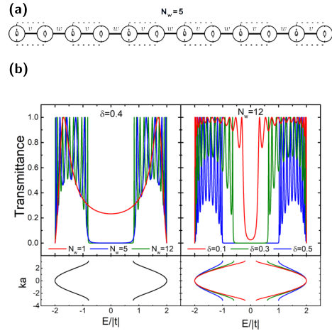
<figcaption class="paper-figure-caption"><b>Fig 1.</b> Figure 1: (a) Finite Su-Shrieffer-Heeger model with hopping amplitudes v and w and length Nw = 5. (b) Transmittance and dispersion of SSH chains with: (Left) Fixed δ = 0.4 and Nw = 1, 5 and 12, and (Right) Fixed length Nw = 12, and δ = 0.1, 0.3, and 0.5. The number of transmission resonances increases with chain length, while the gap width is controlled by the dimerization parameter.</figcaption>
</figure>
<figure class="paper-figure-card">
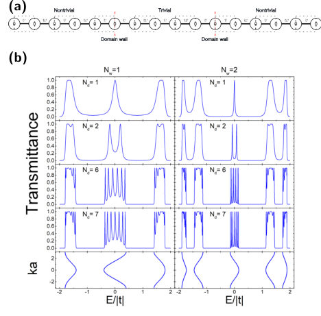
<figcaption class="paper-figure-caption"><b>Fig 2.</b> Figure 2: Formation of minibands from coupled domain-wall states. (a) Domain-wall lattice ob- tained by concatenating SSH chains. The red dashed lines indicate the domain-wall positions. (b) Transmission spectra for increasing numbers of domain walls Nd and the corresponding band structures of the associated infinite periodic sys- tems. Hybridization of the localized domain-wall states produces minibands embedded within the original SSH gap. The cases Nw = 1 and Nw = 2 generate three-band and five-band spectra, respec- tively.</figcaption>
</figure>
<figure class="paper-figure-card">
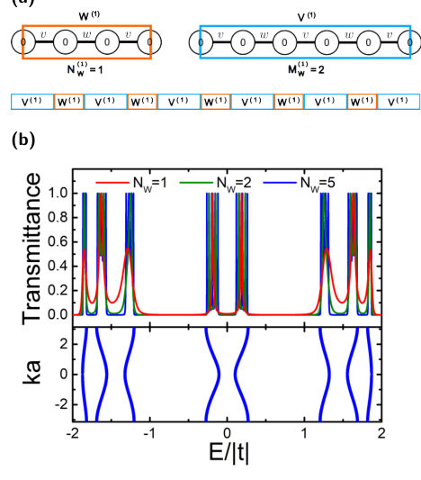
<figcaption class="paper-figure-caption"><b>Fig 3.</b> Figure 3: (a) First-generation building blocks W (1) and V (1), corresponding to N(1) W = 1 and M(1) W = 2, respectively. The lower schematic illustrates the construction of an effective SSH chain from alternating V (1) and W (1) blocks. (b) Transmission spectra for effective SSH chains with NW = 1, 2, and 5, together with the band structure of the corresponding infinite periodic sequence. Calculations were performed for δ = 0.4.</figcaption>
</figure>
<figure class="paper-figure-card">
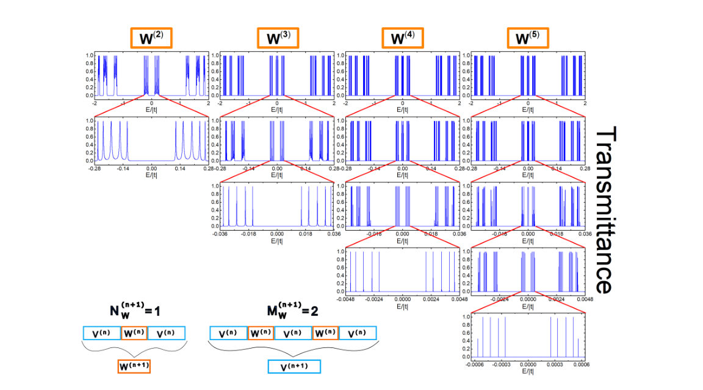
<figcaption class="paper-figure-caption"><b>Fig 4.</b> Figure 4: Hierarchical SSH structures and their transmission spectra. Hierarchy levels are shown from left to right and their corresponding progressive amplifications from top to bottom. Boxes: Effective SSH building blocks of an arbitrary hierarchical level n.</figcaption>
</figure>
<figure class="paper-figure-card">
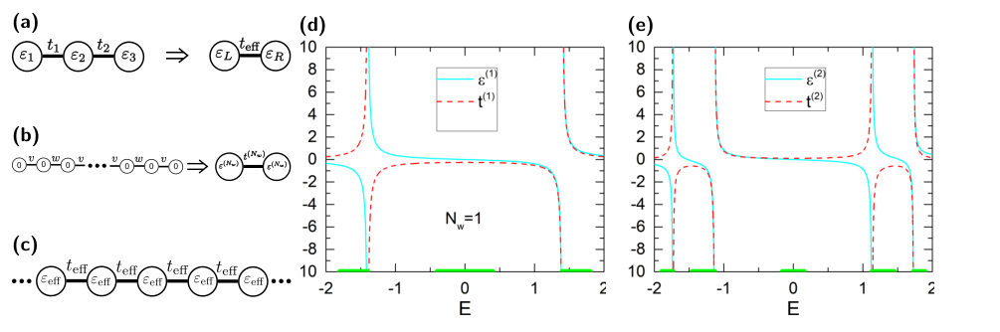
<figcaption class="paper-figure-caption"><b>Fig 5.</b> Figure 5: Effective renormalized description of domain-wall lattices. (a) Elementary three-site decimation. (b) Iterative reduction of a finite SSH segment containing Nw hopping amplitudes w. (c) Effective periodic chain obtained after replacing each SSH segment by its renormalized counterpart. (d) Effective parameters for the elementary domain-wall lattice with Nw = 1. (e) Effective parameters for the elementary domain-wall lattice with Nw = 2. Red dashed curves correspond to the effective hopping t(Nw), while cyan solid curves denote the effective site energy ε(Nw). Green segments mark the energies satisfying the effective band condition, Eq. (17).</figcaption>
</figure>
</div>

<p><strong>Summary.</strong> This work explores quantum transport in SSH chains containing topological domain walls, showing that their interaction creates a self-similar hierarchy of minibands. By developing a recursive construction and analyzing the system via successive decimation, the authors demonstrate how localized topological states act as emergent degrees of freedom to engineer complex, multiscale spectral features. This establishes a general connection between recursive topological building blocks and self-similar spectral organization in 1D quantum systems.</p>
<p><strong>Why it may be interesting.</strong> The concept of emergent, self-similar spectral structures arising from simple local topological defects provides a powerful, general framework for understanding multiscale physics in low-dimensional quantum systems.</p>
<details>
<summary>Detailed structure</summary>
<p><strong>Main problem.</strong> The paper investigates how the interaction of topological domain-wall states in Su-Schrieffer-Heeger (SSH) chains generates a self-similar, hierarchical structure in quantum transport properties.</p>
<p><strong>Main result.</strong> The hybridization of domain-wall localized states leads to minibands whose structure can be recursively constructed, revealing a self-similar hierarchy of spectral gaps and resonances.</p>
<p><strong>Method.</strong> The analysis combines the recursive scattering-matrix method with the development of an effective renormalized description based on successive decimation procedures.</p>
<p><strong>Model / system.</strong> The system is based on SSH chains containing multiple topological domain walls. The model is analyzed by treating the domain-wall states as emergent degrees of freedom that define an effective, recursively built lattice structure.</p>
<p><strong>Key observables.</strong> Transmission spectra, minibands, spectral gaps, and the hierarchy of interlaced singularities in the energy axis.</p>
<p><strong>Important parameters / regimes.</strong> Dimerization parameter (delta), number of domain walls ($N_d$), and the recursive generation index ($n$).</p>
<p><strong>Assumptions / limitations.</strong> The analysis relies on the recursive nature of the scattering-matrix method and the mathematical validity of the decimation procedure for generating effective parameters.</p>
<p><strong>Figures summary.</strong> Figures illustrate the formation of domain-wall lattices, the resulting transmission spectra for increasing domain-wall numbers, and the recursive rules generating higher-order structures.</p>
<p><strong>Paper structure.</strong> The paper progresses from analyzing the initial SSH model with domain walls to demonstrating the recursive construction of effective SSH structures within minibands, culminating in a rigorous mathematical analysis of the singularity generation via successive decimation.</p>
</details>
<details>
<summary>Abstract</summary>
<p>We investigate the transport properties of Su-Schrieffer-Heeger (SSH) chains containing multiple topological domain walls and show that their interaction generates a hierarchy of emergent spectral structures. Each domain wall contributes a localized state inside the SSH gap, and the hybridization of these states produces minibands whose signatures are directly reflected in the transmission spectra. By combining domain-wall lattices with different domain-wall separations, we construct effective SSH structures within the miniband subspace. The resulting transmission spectra reproduce the characteristic features of conventional SSH chains, including gap formation, finite-size resonances, and the correspondence between transmission spectra and band structure. The construction can be applied recursively, generating successive generations of effective SSH structures. As a consequence, effective SSH spectra repeatedly emerge within progressively narrower energy intervals, producing a self-similar hierarchy of minibands and spectral gaps. To understand the origin of this hierarchy, we develop an effective renormalized description based on successive decimation. The effective parameters exhibit a hierarchy of interlaced singularities whose number increases at each iteration. These singularities partition the energy axis into progressively finer intervals and provide a natural interpretation of the repeated fragmentation of the spectrum. Our results show that topological domain-wall states can act as emergent degrees of freedom from which multiscale transport channels, effective couplings, and hierarchical spectral structures may be engineered. More generally, the framework introduced here establishes a connection between recursive topological constructions, effective Hamiltonians, and the emergence of self-similar spectra in one-dimensional systems.</p>
</details>
<p><sub><a href="#top">↑ back to top</a></sub></p>

<p><a id="paper-2608.24322"></a></p>
<h3 id="josephson-effect-in-bipolar-magnetic-semiconductors"><a href="http://arxiv.org/abs/2608.24322v1">Josephson effect in bipolar magnetic semiconductors</a></h3>
<p><strong>Authors:</strong> Polireddi Naveen, Abhiram Soori<br>
<strong>Type:</strong> theory · <strong>Category:</strong> other · <strong>PDF:</strong> <a href="https://arxiv.org/pdf/2608.24322v1">https://arxiv.org/pdf/2608.24322v1</a><br>
<strong>Analysis basis:</strong> full PDF text, analyzed in chunks
<strong>Topic relevance:</strong> <code>Keldysh / 2PI / non-Gaussian methods</code> <strong>1/5</strong> · <code>analog quantum simulation</code> <strong>1/5</strong></p>
<div class="figure-strip-hint">↔ Scroll figures horizontally</div>
<div class="paper-figures-scroll">
<figure class="paper-figure-card">
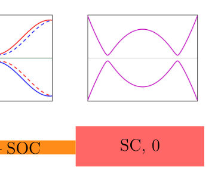
<figcaption class="paper-figure-caption"><b>Fig 1.</b> FIG. 1. The schematic diagram of the set up and their respective dispersions above .</figcaption>
</figure>
<figure class="paper-figure-card">
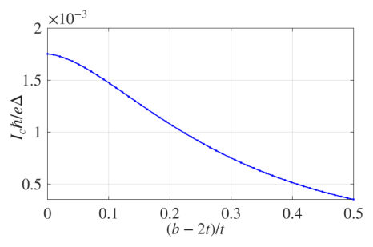
<figcaption class="paper-figure-caption"><b>Fig 2.</b> FIG. 2. Critical current vs the band gap of the BMS for the parameters ∆= 0.1t, µs = −t, tj = t, µb = 0, α = 0, Ls = 15, Lb = 5.</figcaption>
</figure>
<figure class="paper-figure-card">
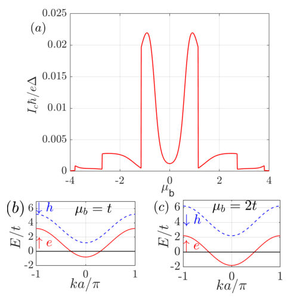
<figcaption class="paper-figure-caption"><b>Fig 3.</b> FIG. 3. (a) Critical current versus the chemical potential of the BMS for the parameters ∆= 0.05t, tj = t, µs = 0, b = 2.2t, α = 0, Ls = 15, and Lb = 5. Below are the dispersions of the up-spin electron and down-spin hole at (b) µb = t and (c) µb = 2t.</figcaption>
</figure>
<figure class="paper-figure-card">
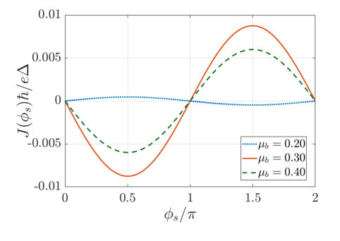
<figcaption class="paper-figure-caption"><b>Fig 4.</b> FIG. 4. CPR relation for Josephson junction of BMS for the parameters ∆= 0.05t, µs = −t, tj = t, b = 2.2t, α = 0, Ls = 10, LB = 5 for different values of µb/t.</figcaption>
</figure>
<figure class="paper-figure-card">
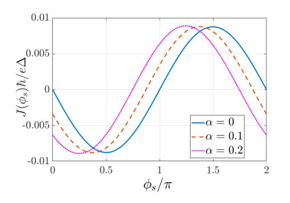
<figcaption class="paper-figure-caption"><b>Fig 5.</b> FIG. 5. CPR relation for Josephson junction of BMS with SOC for the parameters ∆= 0.05t, µs = −t, tj = t, b = 2.2t, Ls = 10, LB = 5. for different values of α/t.</figcaption>
</figure>
</div>

<p><strong>Summary.</strong> This theoretical work explores Josephson junctions utilizing bipolar magnetic semiconductors (BMSs) to demonstrate electrically tunable superconducting behavior. The authors show that gate-tuning the BMS chemical potential can induce a $0-\pi$ transition without external magnetic fields. Furthermore, they analyze an anomalous supercurrent arising from spin-polarized structure, distinguishing it from general superconducting nonreciprocity.</p>
<p><strong>Why it may be interesting.</strong> The ability to control superconducting phase transitions purely electrically using magnetic semiconductors provides a novel platform for superconducting spintronics, relevant to understanding superconducting order parameters in engineered quantum materials.</p>
<details>
<summary>Detailed structure</summary>
<p><strong>Main problem.</strong> The study investigates the Josephson effect in Josephson junctions incorporating bipolar magnetic semiconductors (BMSs) to achieve electrically tunable superconducting behavior.</p>
<p><strong>Main result.</strong> The intrinsic exchange splitting allows for purely electrical control of the 0-$\pi$ transition without external magnetic fields, and the system exhibits an anomalous Josephson effect due to time-reversal symmetry breaking.</p>
<p><strong>Method.</strong> The supercurrent and critical current are calculated by numerically diagonalizing the system's Hamiltonian, which models the junction as SC/BMS/SC.</p>
<p><strong>Model / system.</strong> The physical system is a Josephson junction built using a BMS. The model uses a lattice Hamiltonian incorporating hopping integrals, chemical potentials, and spin-dependent terms arising from the BMS's intrinsic exchange splitting and Rashba SOC.</p>
<p><strong>Key observables.</strong> Critical Josephson current ($I_c$), Current-Phase Relation (CPR), and the occurrence of the $0-\pi$ transition.</p>
<p><strong>Important parameters / regimes.</strong> BMS chemical potential ($\mu_b$), Rashba SOC strength ($\alpha$), and the superconducting gap.</p>
<p><strong>Assumptions / limitations.</strong> The analysis is performed on a one-dimensional junction, and the conclusion regarding the absence of a diode effect is specific to this 1D geometry.</p>
<p><strong>Figures summary.</strong> Figures illustrate the critical current dependence on the BMS band gap and chemical potential, and show the CPR relation for the junction under varying conditions.</p>
<p><strong>Paper structure.</strong> The paper first establishes the theoretical framework using a lattice model, then analyzes the dependence of $I_c$ on the BMS chemical potential, demonstrating the electrical control of the $0-\pi$ transition, and finally discusses the anomalous Josephson effect and its relation to nonreciprocity.</p>
</details>
<details>
<summary>Abstract</summary>
<p>We theoretically investigate equilibrium currents in a one-dimensional Josephson junction incorporating a bipolar magnetic semiconductor (BMS). We show that the intrinsic exchange splitting of the spin-resolved bands enables purely electrical control of the $0$--$π$ transition through gate-tunable modulation of the BMS chemical potential, eliminating the need for an external magnetic field. This provides a viable route toward electrically tunable $π$-junction behavior and highlights the potential of BMS-based Josephson devices for phase-controllable superconducting electronics. Furthermore, in the presence of Rashba spin--orbit coupling, we find an anomalous Josephson effect characterized by a finite equilibrium supercurrent at zero phase difference. This behavior originates from the intrinsic breaking of time-reversal symmetry associated with the spin-polarized electronic structure of the BMS. Interestingly, despite the simultaneous breaking of time-reversal and inversion symmetries---conditions often associated with nonreciprocal superconducting transport---we do not observe a Josephson diode effect. Our results therefore highlight an important distinction between anomalous Josephson transport and superconducting nonreciprocity: the former does not necessarily imply a finite critical-current asymmetry between opposite current directions.</p>
</details>
<p><sub><a href="#top">↑ back to top</a></sub></p>

<p><a id="paper-2608.24619"></a></p>
<h3 id="engineering-plasmons-in-oxidegraphene-heterostructures-via-interfacial-charge-transfer"><a href="http://arxiv.org/abs/2608.24619v1">Engineering Plasmons in Oxide/Graphene Heterostructures via Interfacial Charge Transfer</a></h3>
<p><strong>Authors:</strong> Yuanchen Chi, Dongxu Di, Michael Fralaide, Jigang Wang, Zhe Fei<br>
<strong>Type:</strong> both · <strong>Category:</strong> other · <strong>PDF:</strong> <a href="https://arxiv.org/pdf/2608.24619v1">https://arxiv.org/pdf/2608.24619v1</a><br>
<strong>Analysis basis:</strong> full PDF text, analyzed in chunks
<strong>Topic relevance:</strong> <code>interference shaping light</code> <strong>1/5</strong></p>
<div class="figure-strip-hint">↔ Scroll figures horizontally</div>
<div class="paper-figures-scroll">
<figure class="paper-figure-card">
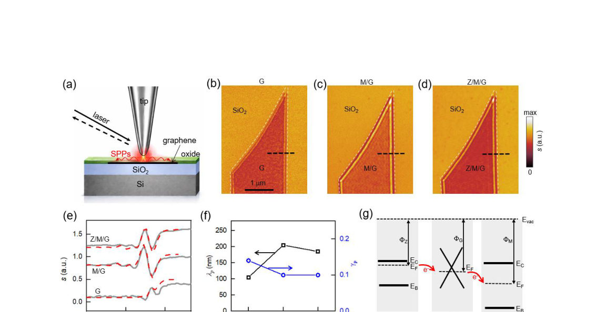
<figcaption class="paper-figure-caption"><b>Fig 1.</b> Figure 1. (a) Schematic of the nano-IR imaging measurement of an oxide/graphene heterostructure. (b-d) Nano-IR images of bare graphene (G), MoOₓ/graphene (M/G) heterostructure, and ZnOx/MoOₓ/graphene (Z/M/G) heterostructure, respectively. The excitation laser energy is set to be 115 meV. (e) Line profiles perpendicular to the edges of the sample taken along the dashed lines in panels (b-d). (f) Extracted plasmon wavelength λp (black squares) and damping rate p (blue circles) by fitting the profiles in panel (e). (g) Band alignment diagram illustrating charge transfer between graphene and the two types of oxides. For quantitative analysis of the SPP fringes, we extract horizontal line...</figcaption>
</figure>
<figure class="paper-figure-card">
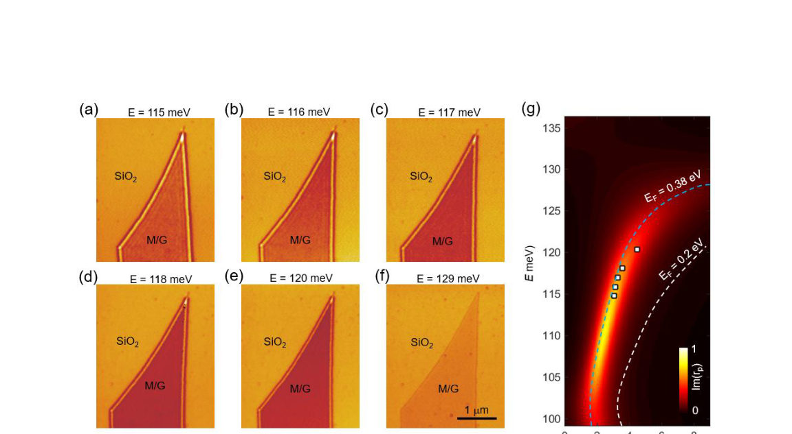
<figcaption class="paper-figure-caption"><b>Fig 2.</b> Figure 2. (a–f) Nano-IR images acquired at different excitation energies (E). (g) Plasmon dispersion relationship from both experimental data (white squares) and theoretical calculations (colormap). The results in Figs. 1 and 2 demonstrate the effectiveness of charge-transfer doping by an ultrathin (~0.5 nm) MoOₓ overlayer in enhancing graphene SPPs. To further elucidate this mechanism, we perform systematic nano-IR imaging while using the MoOₓ thickness (d) as a tuning parameter. Specifically, MoOₓ is deposited on graphene in a stepwise manner, and after each deposition step, a nano-IR image is acquired to track the evolution of the SPP interference fringes. The images are plotted in Fig....</figcaption>
</figure>
<figure class="paper-figure-card">
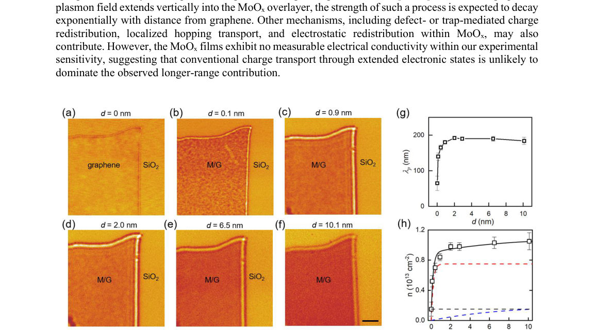
<figcaption class="paper-figure-caption"><b>Fig 3.</b> Figure 3. (a-f) Nano-IR images of bare graphene and MoOx/graphene heterostructures with different thicknesses of MoOx. (g,h) The extracted plasmon wavelength p and carrier density n (data points) versus deposition thickness of MoOx. One advantage of graphene heterostructures fabricated with top-down methods (e.g., PVD or mechanical transfer) is the preserved capability of electrical gating. In comparison, intercalation [12-19] – the other method capable of producing stable charge-transfer graphene heterostructures – works mainly on few-layer graphene or graphite, so it might lose the capability or efficiency of electric gating due to the relatively large sample thickness. Nevertheless, the...</figcaption>
</figure>
<figure class="paper-figure-card">
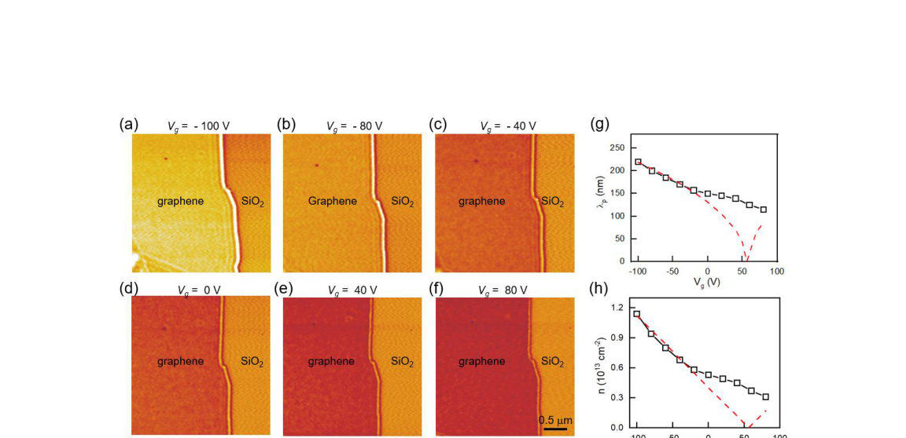
<figcaption class="paper-figure-caption"><b>Fig 4.</b> Fig. 4. (a-f) Nano-IR images of a MoOₓ/graphene heterostructure acquired under various back-gate voltages Vg. (g,h) The extracted plasmon wavelength λp and carrier density n versus gate voltage (Vg). The red dashed curves in panels g and h are calculated dependence curves for pristine graphene based on Eqs. 2 and 3.</figcaption>
</figure>
<figure class="paper-figure-card">
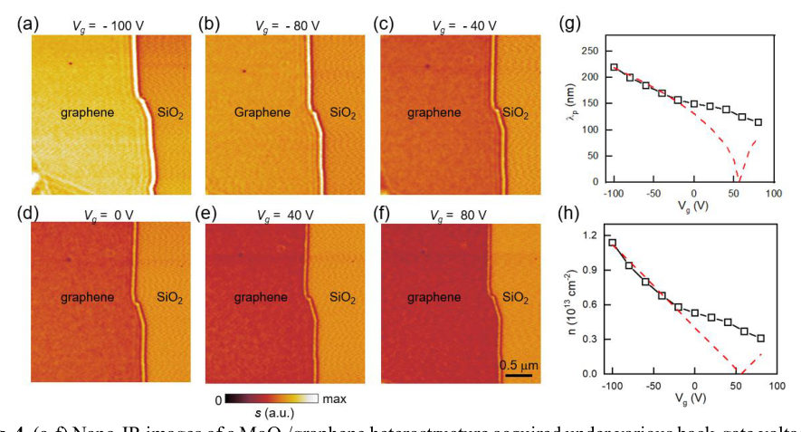
<figcaption class="paper-figure-caption"><b>Fig 5.</b> Fig. 5. (a,b) Nano-IR images of a MoOₓ/graphene heterostructure acquired immediately after fabrication (a) and after 7 months of ambient exposure (b). (c) Line profiles (gray) extracted perpendicular to the SPP fringes in (a) and (b), together with the modeling profiles (red). 3. Conclusion</figcaption>
</figure>
</div>

<p><strong>Summary.</strong> This research demonstrates that depositing ultrathin oxide layers on graphene allows for precise engineering of surface plasmon polaritons via interfacial charge transfer doping. By using s-SNOM and quantitative modeling, the authors show that the oxide material dictates the plasmon wavelength and stability, establishing oxide/graphene stacks as a robust platform for tunable infrared optoelectronics.</p>
<p><strong>Why it may be interesting.</strong> The work provides a clear, tunable mechanism (interfacial charge transfer) to control plasmonic properties in 2D materials, which is highly relevant for designing stable, functional nanophotonic devices.</p>
<details>
<summary>Detailed structure</summary>
<p><strong>Main problem.</strong> The paper investigates how interfacial charge transfer between oxide and graphene layers can be used to systematically engineer the optical and electronic properties, specifically the surface plasmon polaritons (SPPs), in these heterostructures.</p>
<p><strong>Main result.</strong> Depositing $   ext{MoO}_x$ strongly enhances the plasmonic response and increases graphene doping, while subsequent $  ext{ZnO}_x$ deposition partially reverses these effects; the structure proves to be a robust platform for stable nanophotonics.</p>
<p><strong>Method.</strong> The study combines experimental characterization using scattering-type s-SNOM with quantitative modeling based on multilayer transfer-matrix methods and charge transfer doping models.</p>
<p><strong>Model / system.</strong> The physical system is an oxide/graphene heterostructure (e.g., $   ext{MoO}_x/ ext{graphene}$), where the plasmon dispersion and carrier density are modeled as functions of oxide thickness and external gating voltage.</p>
<p><strong>Key observables.</strong> Plasmon wavelength ($\lambda_p$), damping rate ($\gamma_p$), graphene carrier density ($n$), and the evolution of the plasmon dispersion relationship $E(q_p)$.</p>
<p><strong>Important parameters / regimes.</strong> Oxide layer thickness ($d$), gate voltage ($V_g$), and the work functions of the constituent materials ($\Phi_M, \Phi_Z$).</p>
<p><strong>Assumptions / limitations.</strong> The analysis relies on modeling the plasmon field decay using the complex in-plane wavevector, leading to an intensity decay length $L_I = \lambda_p / (4\pi)$.</p>
<p><strong>Figures summary.</strong> Figures show nano-IR images comparing bare graphene to structures with $   ext{MoO}_x$ and $   ext{ZnO}_x$, illustrating changes in fringe contrast and wavelength; dispersion plots map the plasmon energy vs. momentum.</p>
<p><strong>Paper structure.</strong> The paper systematically presents experimental measurements varying oxide thickness and gate voltage, correlating observed plasmon shifts and damping rates with theoretical models of interfacial charge transfer doping and plasmon field decay.</p>
</details>
<details>
<summary>Abstract</summary>
<p>Interfacial charge transfer provides an effective route for tailoring the optical and electronic properties of two-dimensional materials. Here, we investigate infrared surface plasmon polaritons in oxide/graphene heterostructures using scattering-type scanning near-field optical microscopy. Ultrathin oxide overlayers deposited by physical vapor deposition enable systematic engineering of graphene plasmons through interfacial charge redistribution. MoOx strongly enhances the plasmonic response, producing a longer plasmon wavelength, stronger fringe contrast, and reduced damping, whereas a subsequently deposited ZnOx overlayer partially reverses these changes. Energy-dependent nano-infrared imaging combined with quantitative modeling reveals an increased graphene carrier density and the resulting modification of the plasmon dispersion. Thickness-dependent measurements show a rapid increase in charge-transfer doping at sub-nanometer MoOx thicknesses, followed by a weaker long-range contribution at larger overlayer thicknesses. Electrostatic gating further modulates the carrier density and produces a nonlinear response consistent with gate-dependent interfacial charge redistribution. In addition, an approximately 3-nm-thick MoOx overlayer stabilizes the plasmonic response for at least seven months under ambient conditions. These results establish oxide/graphene heterostructures as a robust platform compatible with scalable fabrication, providing a pathway toward stable and tunable infrared nanophotonic and optoelectronic devices.</p>
</details>
<p><sub><a href="#top">↑ back to top</a></sub></p>

<p><a id="paper-2608.24710"></a></p>
<h3 id="enhanced-superconductivity-in-multilayer-fese-films-by-simplified-molecular-beam-epitaxy"><a href="http://arxiv.org/abs/2608.24710v1">Enhanced Superconductivity in Multilayer FeSe Films by Simplified Molecular Beam Epitaxy</a></h3>
<p><strong>Authors:</strong> Maria Hilse, Hemian Yi, Zhe Chen, Jessica L. Thompson, Kalana D. Halanayake, Danielle Reifsnyder Hickey, Seong H. Kim, Cui-Zu Chang, Nitin Samarth, Roman Engel-Herbert<br>
<strong>Type:</strong> experiment · <strong>Category:</strong> strongly correlated electrons · <strong>PDF:</strong> <a href="https://arxiv.org/pdf/2608.24710v1">https://arxiv.org/pdf/2608.24710v1</a><br>
<strong>Analysis basis:</strong> full PDF text, analyzed in chunks
<strong>Topic relevance:</strong> <code>analog quantum simulation</code> <strong>1/5</strong></p>
<div class="figure-strip-hint">↔ Scroll figures horizontally</div>
<div class="paper-figures-scroll">
<figure class="paper-figure-card">
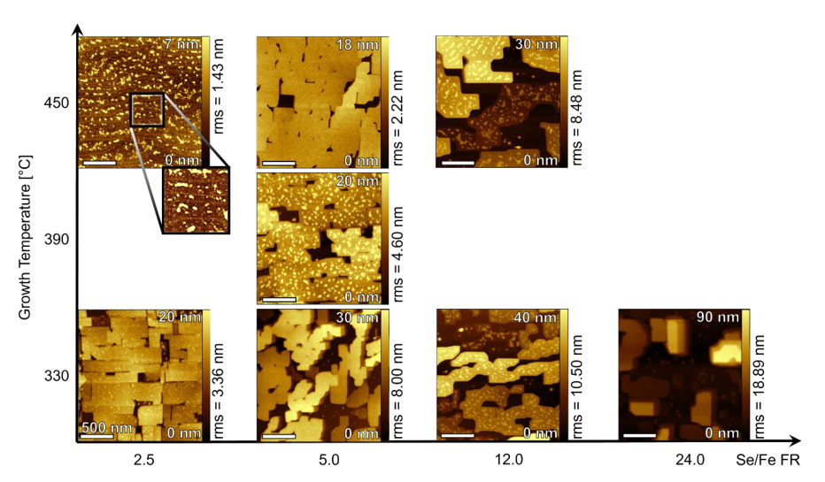
<figcaption class="paper-figure-caption"><b>Fig 1.</b> Figure 1. Surface morphology measured in AFM for FeSe films grown at different</figcaption>
</figure>
<figure class="paper-figure-card">
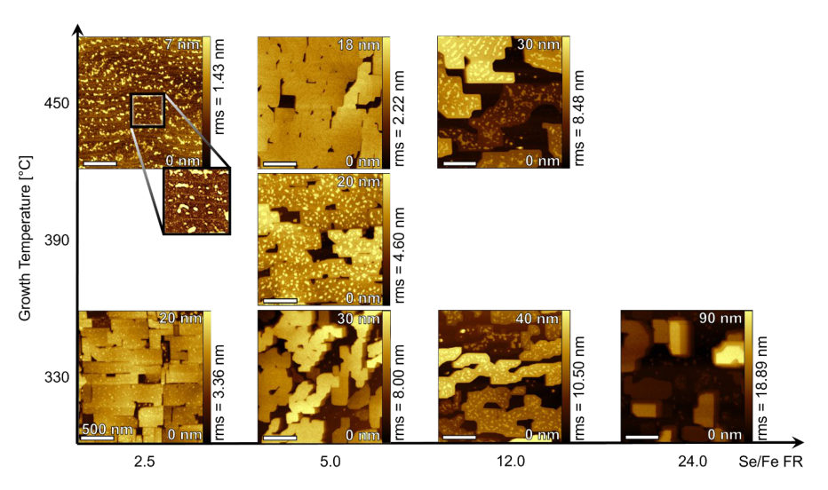
<figcaption class="paper-figure-caption"><b>Fig 2.</b> Figure 1 thus demonstrates that a high Se overpressure during FeSe growth, i.e., high FR</figcaption>
</figure>
<figure class="paper-figure-card">
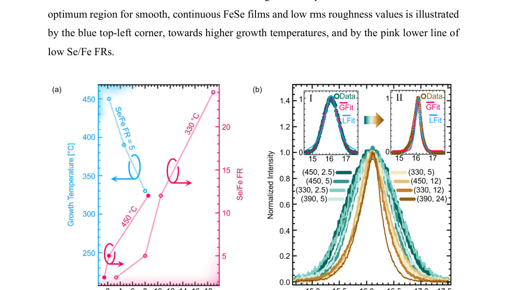
<figcaption class="paper-figure-caption"><b>Fig 3.</b> Figure 2. (a) The rms values obtained for all samples shown in Figure 1 plotted over the FeSe</figcaption>
</figure>
<figure class="paper-figure-card">
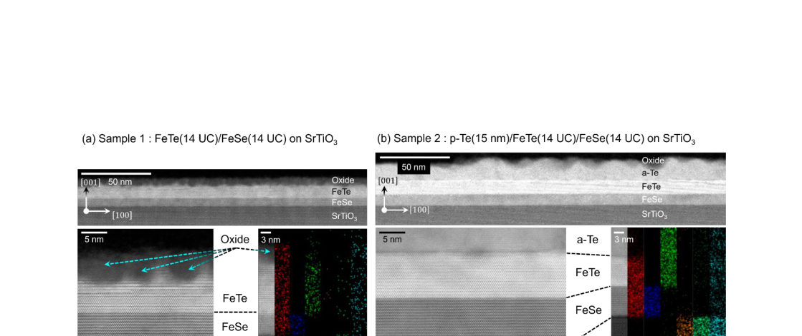
<figcaption class="paper-figure-caption"><b>Fig 4.</b> Figure 3. ADF-STEM images at low and high magnification and EDX elemental maps of the</figcaption>
</figure>
<figure class="paper-figure-card">
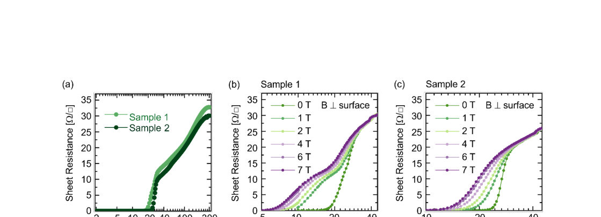
<figcaption class="paper-figure-caption"><b>Fig 5.</b> Figure 4. (a) Electrical transport measurement of sheet resistance versus temperature at zero</figcaption>
</figure>
</div>

<p><strong>Summary.</strong> This work reports a breakthrough in synthesizing superconducting FeSe films by developing a greatly simplified MBE growth protocol. By eliminating complex substrate pre-treatments and post-growth annealing, the authors achieved high-quality, multi-unit-cell films exhibiting a high superconducting transition temperature of $\sim 20 	ext{ K}$. This significantly advances the practical synthesis of high-temperature superconducting materials.</p>
<p><strong>Why it may be interesting.</strong> While focused on solid-state superconductivity, the detailed control over epitaxial growth, stoichiometry, and structural transitions (e.g., island vs. layer-by-layer growth) provides valuable experimental insights into achieving highly ordered quantum materials, which is relevant for understanding correlated electron behavior in artificial quantum systems.</p>
<details>
<summary>Detailed structure</summary>
<p><strong>Main problem.</strong> The primary goal is to achieve enhanced superconductivity in multilayer beta-FeSe films while significantly simplifying the complex molecular beam epitaxy (MBE) growth protocols previously required.</p>
<p><strong>Main result.</strong> The authors successfully demonstrated an enhanced superconducting transition temperature ($T_c \sim 20 	ext{ K}$) in 14-unit-cell films using a greatly simplified MBE protocol that eliminates the need for substrate pre-treatment or post-growth UHV annealing.</p>
<p><strong>Method.</strong> The study employs MBE growth techniques coupled with extensive characterization, including AFM, RHEED, XRD, and ex situ electrical transport measurements, to correlate growth parameters with film quality and superconducting properties.</p>
<p><strong>Model / system.</strong> The physical system is multi-unit-cell (UC) beta-FeSe films epitaxially grown on SrTiO3(100) substrates. The research focuses on controlling the film's stoichiometry and crystalline quality to maximize the superconducting transition temperature.</p>
<p><strong>Key observables.</strong> Superconducting transition temperature ($T_c$), root mean square (rms) roughness (AFM), XRD peak width (FWHM), and sheet resistance.</p>
<p><strong>Important parameters / regimes.</strong> Growth Temperature ($T_{	ext{GG}}$), Se/Fe flux ratio (FR), and film thickness (up to 14 UC).</p>
<p><strong>Assumptions / limitations.</strong> The authors challenge the prior understanding that elaborate protocols (pre-treatment, annealing) are strictly necessary for high-$T_c$ FeSe films.</p>
<p><strong>Figures summary.</strong> Figures illustrate the dependence of AFM surface morphology on growth temperature and Se/Fe FR, while XRD scans track changes in crystallinity (peak width) across different growth conditions.</p>
<p><strong>Paper structure.</strong> The paper establishes the background on enhanced $T_c$ in FeSe, presents the novel simplified growth protocol, details the characterization of morphology and structure using multiple techniques, and concludes with the measurement of high $T_c$ values.</p>
</details>
<details>
<summary>Abstract</summary>
<p>Multi-unit-cell (UC) \b{eta}-FeSe films grown on SrTiO3(100) continue to attract attention because of the significant enhancement in the superconducting transition temperature (Tc) compared to that in bulk FeSe. In prior reports of molecular beam epitaxy (MBE)-grown \b{eta}-FeSe/SrTiO3(100), elaborate growth protocols have been used to achieve enhanced Tc, leading to a general belief that careful pre-treatment of the SrTiO3 substrate and post-growth annealing in ultrahigh vacuum (UHV) are essential. Here, we report a greatly simplified protocol for the MBE growth of superconducting multi-UC \b{eta}-FeSe films on SrTiO3(100), eliminating the need for careful substrate pre-treatment and post-growth UHV annealing while still achieving an enhanced Tc. With appropriate capping, epitaxial films with 14 UC thickness exhibit a zero-resistance transition temperature Tc ~ 20 K in ex situ electrical transport measurements. The MBE optimization process is guided by the growth-parameter dependencies of film morphology and structural properties, as characterized by reflection high-energy electron diffraction, X-ray diffraction, atomic force microscopy, and scanning transmission electron microscopy.</p>
</details>
<p><sub><a href="#top">↑ back to top</a></sub></p>
<h3 id="other-secondary-papers-3">Other secondary papers (3)</h3>
<details>
<summary>Show other secondary papers</summary>

<p><a id="paper-2608.24663"></a></p>
<h3 id="exciton-fine-structure-in-nanocrystals-effect-of-cuboidal-and-spheroidal-shapes"><a href="http://arxiv.org/abs/2608.24663v1">Exciton fine structure in nanocrystals: effect of cuboidal and spheroidal shapes</a></h3>
<p><strong>Authors:</strong> M. A. Semina, O. O. Druzhinina, A. A. Golovatentko, A. V. Rodina<br>
<strong>Type:</strong> theory · <strong>Category:</strong> other · <strong>PDF:</strong> <a href="https://arxiv.org/pdf/2608.24663v1">https://arxiv.org/pdf/2608.24663v1</a><br>
<strong>Analysis basis:</strong> full PDF text, analyzed in chunks</p>
<div class="figure-strip-hint">↔ Scroll figures horizontally</div>
<div class="paper-figures-scroll">
<figure class="paper-figure-card">

<figcaption class="paper-figure-caption"><b>Fig 1.</b> FIG. 1. (a) The Sketch of the structures under study: (upper row) spherical NC with radius a and</figcaption>
</figure>
<figure class="paper-figure-card">

<figcaption class="paper-figure-caption"><b>Fig 2.</b> FIG. 2. (a) The heavy and light hole splitting ∆= E1/2 −E3/2 in units of Eh as a function</figcaption>
</figure>
<figure class="paper-figure-card">

<figcaption class="paper-figure-caption"><b>Fig 3.</b> FIG. 3. (a) The relative accuracy of the spherical approximation for Luttinger Hamiltonian</figcaption>
</figure>
<figure class="paper-figure-card">

<figcaption class="paper-figure-caption"><b>Fig 4.</b> FIG. 4. Dimensionless isotropic η/ωa , (a,c), and cubically-symmetric, ∆c/ωa , (b,d) electron-hole</figcaption>
</figure>
<figure class="paper-figure-card">

<figcaption class="paper-figure-caption"><b>Fig 5.</b> FIG. 5. Dimensionless short-range exchange interaction constants (a) η⊥/ωa, η∥/ωa , and (b)</figcaption>
</figure>
</div>
<p><strong>Summary.</strong> This theoretical work models the exciton fine structure in semiconductor nanocrystals with non-spherical shapes like cuboids and spheroids. It rigorously incorporates the effects of crystal symmetry and shape anisotropy into the exciton Hamiltonian. The key finding is that shape-induced exchange interactions significantly split the dark exciton states, providing crucial design rules for quantum emitters.</p>
<p><strong>Why it may be interesting.</strong> The detailed quantum mechanical treatment of shape-dependent excitonic properties in low-dimensional semiconductors is highly relevant to quantum optics and quantum information applications utilizing semiconductor quantum emitters.</p>
<details>
<summary>Detailed structure</summary>
<p><strong>Main problem.</strong> The paper investigates the exciton fine structure in semiconductor nanocrystals (NCs) that possess non-spherical, cuboidal, or spheroidal shapes.</p>
<p><strong>Main result.</strong> The study identifies a non-negligible, shape-induced contribution to the short-range exchange interaction in cuboidal NCs, which causes a pronounced splitting of the dark exciton states.</p>
<p><strong>Method.</strong> The authors employ symmetry analysis and non-perturbative theoretical calculations using an effective Hamiltonian derived from the Luttinger Hamiltonian for hole states.</p>
<p><strong>Model / system.</strong> The system is colloidal semiconductor nanocrystals (e.g., zinc-blende structure) modeled with electron and hole wave functions, considering the effects of cubic symmetry and uniaxial anisotropy on the exciton Hamiltonian.</p>
<p><strong>Key observables.</strong> Exciton fine structure splitting, hole ground state splitting, and oscillator strength.</p>
<p><strong>Important parameters / regimes.</strong> Anisotropy ratios (q=c/b), material parameters (e.g., hole mass ratio $eta$), and the relative strength of anisotropic splitting versus exchange constants.</p>
<p><strong>Assumptions / limitations.</strong> The analysis assumes the energy potential profile is box-like (infinite potential) and that electron/hole wave functions can be factorized.</p>
<p><strong>Figures summary.</strong> Figures illustrate the dependence of hole ground state energy on material ratios for spherical and cubical NCs, and show the calculated exciton splitting ($\Delta$) as a function of the anisotropy ratio ($q=c/b$).</p>
<p><strong>Paper structure.</strong> The paper builds from general symmetry analysis to derive an effective Hamiltonian, then applies this to calculate hole energy splittings under anisotropic conditions, and finally analyzes the resulting exciton fine structure and oscillator strength.</p>
</details>
<details>
<summary>Abstract</summary>
<p>We present the theory of the band-edge exciton fine structure in nanocrystals (NCs) with spheroidal and cuboidal shapes. The effects of the cubic symmetry of the crystal lattice, the cubic shape of the NC, and NC uniaxial anisotropy on the hole energy states and electron-hole exchange interactions are considered non-perturbatively. Symmetry analysis yields an effective Hamiltonian for the exciton fine structure, parameterized by one constant for hole energy splitting and five independent constants for exchange interaction. Numerical calculations reveal that in uniaxially anisotropic zinc-blende NCs, the sign of the hole ground state splitting depends on the material parameters and on the orientation of the anisotropy axis relative to the crystallographic axes. Beyond the conventional bulk cubically-symmetric contribution to the exchange interaction, which originates from Bloch-function symmetry and is typically negligible, in nanocrystals, we identify the contribution arising from the cubic symmetry of the envelope wavefunction. This cubically symmetric envelope-induced short-range exchange is non-negligible in cuboidal NCs and induces a pronounced splitting of the dark exciton states. We further analyze the influence of uniaxial anisotropy of the exchange constants on both the exciton fine structure and the oscillator strength. Special attention is paid to NCs, where the anisotropy of the exchange constants is comparable to a relatively small hole energy anisotropic splitting.</p>
</details>
<p><sub><a href="#top">↑ back to top</a></sub></p>

<p><a id="paper-2608.23823"></a></p>
<h3 id="intertwined-spin-charge-stripe-order-and-polar-lattice-distortion-in-lamath1138mathnimath1139mathomath1140math"><a href="http://arxiv.org/abs/2608.23823v1">Intertwined spin-charge stripe order and polar lattice distortion in La$_{3}$Ni$_{2}$O$_{7}$</a></h3>
<p><strong>Authors:</strong> Xiaoying Li, Wenqian Tu, Run Lv, Li'e Liu, Dingfu Shao, Yuping Sun, Wenjian Lu<br>
<strong>Type:</strong> theory · <strong>Category:</strong> strongly correlated electrons · <strong>PDF:</strong> <a href="https://arxiv.org/pdf/2608.23823v1">https://arxiv.org/pdf/2608.23823v1</a><br>
<strong>Analysis basis:</strong> full PDF text, analyzed in chunks</p>
<div class="figure-strip-hint">↔ Scroll figures horizontally</div>
<div class="paper-figures-scroll">
<figure class="paper-figure-card">

<figcaption class="paper-figure-caption"><b>Fig 1.</b> FIG. 1. Crystal and electronic structures, Fermi surfaces, and spin susceptibility of La3Ni2O7 at ambient pressure and 30 GPa. (a) Amam crystal structure of La3Ni2O7 at ambient pressure, with θ denoting the interlayer Ni–O–Ni bond angle. (b) and (e) Orbital-projected band structures of the Amam and I4/mmm phases, respectively. Blue and red line widths represent the Ni-3dx2−y2 and Ni-3dz2 orbital weights. (c) and (f) Corresponding orbital-resolved Fermi surfaces projected onto the kx–ky plane, with relevant nesting vectors indicated. In (c), the black diamond and gray square indicate the folded and unfolded BZ, respectively (the dashed α′ and β′ are folded replicas of the α and β sheets)....</figcaption>
</figure>
<figure class="paper-figure-card">

<figcaption class="paper-figure-caption"><b>Fig 2.</b> FIG. 2. Pressure evolution of static spin susceptibility χS(q) of La3Ni2O7 and comparison with the experimental transition temperatures. (a) and (c) χS(q) along the Γ-X-M-Γ path at selected pressures. The inset in (a) highlights the dominant peak near the X point. In (c), the peak near the X point arises primarily from nesting between the β and γ FS sheets, characterized by Q1. (b) and (d) Pressure dependence of the peak value of χS(q) near X (orange), compared with the experimental density- wave-like transition temperature T exp. DW [27] and superconducting transition temperature T exp. C [28] (blue), respectively.</figcaption>
</figure>
<figure class="paper-figure-card">

<figcaption class="paper-figure-caption"><b>Fig 3.</b> FIG. 3. Magnetic configurations and phonon dispersions of the a- and b-oriented spin-charge-stripe states in La3Ni2O7. (a) and (d) Three-dimensional views of the relaxed a-stripe and b-stripe magnetic structures, respectively. Red and blue arrows denote spin-up and spin-down Ni moments, respectively. (b) and (e) Schematic top views of the corresponding spin arrangements in the NiO2 plane. The circle color denotes the spin direction, while the circle size and color saturation distinguish Ni sites with larger and smaller moment magnitudes. (c) and (f) Low-frequency phonon dispersions of the a-stripe and b-stripe states, respectively, along the selected high-symmetry path.</figcaption>
</figure>
<figure class="paper-figure-card">

<figcaption class="paper-figure-caption"><b>Fig 4.</b> FIG. 4. Local Ni–O bond disproportionation and DW-driven symmetry lowering in La3Ni2O7. (a) and (d) Top view of the relaxed a-stripe and b-stripe states, respectively. Red and blue indicate spin-up and spin-down moments, respectively, whereas the darker and lighter colors denote the Ni2+-like and Ni3+-like sites, respectively. The four in-plane Ni–O bonds are labeled Bond1–Bond4. (b) and (e) Corresponding Ni–O bond lengths, compared with those of the reference Amam and experimentally proposed Am2m structures. (c) Side views of the parent Amam structure and the relaxed a-stripe structures, illustrating the spontaneous symmetry lowering to polar Am2m. Yellow and blue bonds indicate Ni–O bond...</figcaption>
</figure>
</div>
<p><strong>Summary.</strong> This theoretical study investigates the coupled spin, charge, and lattice ordering in La3Ni2O7 using first-principles calculations. It finds that spin-charge-stripe states are the ground state, which spontaneously distort into a polar structure. The work establishes that these three degrees of freedom are strongly intertwined, providing insights into the mechanism behind superconductivity in nickelates.</p>
<p><strong>Why it may be interesting.</strong> The strong coupling between spin, charge, and lattice degrees of freedom, and the emergence of superconductivity linked to spin fluctuations, are central themes in strongly correlated electron physics, relevant to understanding unconventional superconductivity mechanisms.</p>
<details>
<summary>Detailed structure</summary>
<p><strong>Main problem.</strong> The study aims to clarify the microscopic relationship among spin, charge, and lattice degrees of freedom in the low-temperature density-wave state of La3Ni2O7.</p>
<p><strong>Main result.</strong> The spin-charge-stripe states are found to be energetically favored, and the system spontaneously relaxes into the polar Am2m structure via a polar distortion, establishing a unified picture of coupled responses.</p>
<p><strong>Method.</strong> The research employs first-principles calculations using DFT+U and analyzes the pressure evolution of electronic structure and static spin susceptibility.</p>
<p><strong>Model / system.</strong> The physical system is the nickelate material La3Ni2O7, which exhibits complex electronic, magnetic, and structural instabilities, particularly in its density-wave state.</p>
<p><strong>Key observables.</strong> Static spin susceptibility (chi_S(q)), Fermi surface nesting vectors, local Ni magnetic moments, and lattice parameters (Ni–O bond lengths).</p>
<p><strong>Important parameters / regimes.</strong> Pressure (P), which is used to tune the system through different electronic and magnetic regimes.</p>
<p><strong>Assumptions / limitations.</strong> The analysis relies on DFT+U calculations and treats the spin susceptibility using a simplified Random Phase Approximation (RPA).</p>
<p><strong>Figures summary.</strong> Figures illustrate the electronic structure, Fermi surface reconstruction, and the pressure dependence of the spin susceptibility peak, correlating it with both the density-wave and superconducting transition temperatures.</p>
<p><strong>Paper structure.</strong> The paper progresses by first analyzing the ambient pressure SDW state driven by FS nesting, then investigating the pressure evolution, identifying the stable spin-charge-stripe states, and finally demonstrating the structural relaxation into the polar Am2m phase.</p>
</details>
<details>
<summary>Abstract</summary>
<p>The low-temperature density-wave state of La$_3$Ni$_2$O$_7$ hosts pronounced spin-density-wave (SDW) order, while recent experiments further reveal charge redistribution and a concomitant lattice-symmetry lowering. However, the microscopic relationship among spin, charge, and lattice remains unclear. Using first-principles calculations, we investigate the pressure evolution of the electronic structure and static spin susceptibility of La$_3$Ni$_2$O$_7$, together with the energetics and lattice response of representative magnetic configurations. We trace the SDW instability to strong Fermi-surface nesting and find that the high-pressure spin response closely tracks $T_{\mathrm C}$, suggesting spin-fluctuation-mediated pairing. Among the candidate magnetic states considered, the spin-charge-stripe states emerge as energetically favored and dynamically stable, developing pronounced disproportionation of both the local Ni moments and the Ni--O bond lengths. Remarkably, the lowest-energy a-stripe state spontaneously relaxes into the experimentally proposed polar Am2m structure through a polar distortion along the b axis. These results establish a unified picture in which spin, charge, and lattice responses are strongly intertwined in the low-pressure density-wave state, while spin fluctuations remain a plausible ingredient of superconductivity under pressure.</p>
</details>
<p><sub><a href="#top">↑ back to top</a></sub></p>

<p><a id="paper-2608.24344"></a></p>
<h3 id="nonlocal-nonlinear-phonon-polaritons"><a href="http://arxiv.org/abs/2608.24344v1">Nonlocal-nonlinear phonon polaritons</a></h3>
<p><strong>Authors:</strong> Gonzalo Álvarez-Pérez, Line Jelver, Alexander Paarmann, Simone De Liberato<br>
<strong>Type:</strong> theory · <strong>Category:</strong> other · <strong>PDF:</strong> <a href="https://arxiv.org/pdf/2608.24344v1">https://arxiv.org/pdf/2608.24344v1</a><br>
<strong>Analysis basis:</strong> full PDF text, analyzed in chunks</p>
<div class="figure-strip-hint">↔ Scroll figures horizontally</div>
<div class="paper-figures-scroll">
<figure class="paper-figure-card">

<figcaption class="paper-figure-caption"><b>Fig 1.</b> Fig. 2 Local versus nonlocal origins of second-order optical nonlinearity in a crystal lattice. (a) In the local picture (left), the lattice response is identical from one unit cell to the next, so the second-order polarization at frequency ω2 is determined solely by the local response to the incident field at ω1. In the nonlocal picture (right), the lattice response varies across neighboring unit cells, giving rise to a spatially-dispersive (nonlocal) second-order polarization. (b) Potential energy landscape illustrating inversion symmetry: the local cubic anharmonicity U (0) 3 satisfies U(Xα) = U(−Xα) and is therefore forbidden in centrosymmetric crystals (left), while the...</figcaption>
</figure>
<figure class="paper-figure-card">

<figcaption class="paper-figure-caption"><b>Fig 2.</b> Fig. 3 Schematic representation of the symmetry selection rules for the three leading anharmonic energy contributions of nonlocal-nonlinear PhPs under spatial inversion. U(0) 3 (zero spatial derivatives) and U(2) 3 (two spatial derivatives) acquire a sign change and are forbid-</figcaption>
</figure>
<figure class="paper-figure-card">

<figcaption class="paper-figure-caption"><b>Fig 3.</b> Fig. 4 First-principles phonon dispersions and nonlocal anharmonic coefficients for three representative polar crystals. (a) Relaxed conventional unit cells of 3C-SiC (left), MgO (middle) and LiF (right). Arrows depict the Γ-point TO phonon displacement pattern at fixed amplitude for clarity. (b) Harmonic phonon band structures of cubic 3C-SiC, MgO, and LiF calculated using DFPT with the PBEsol functional, plotted along high-symmetry paths in the Brillouin zone. Grey shading marks the small-wavevector fitting window (q2 ≤0.005 (2π/a)2) used to extract the nonlocal harmonic coefficients βL and βT . The full harmonic phonon band structures are shown in the Supplementary Information. (c)...</figcaption>
</figure>
</div>
<p><strong>Summary.</strong> This paper develops a theory to study nonlocal nonlinear optics in polar crystals by examining the coupling between light and lattice vibrations (phonon polaritons). It reveals a novel second-order nonlinear process stemming from lattice anharmonicity that can generate strong SHG signals even in materials that are otherwise centrosymmetric. The findings establish a new theoretical regime for light-matter interaction in dielectrics.</p>
<p><strong>Why it may be interesting.</strong> This work bridges condensed matter theory (lattice dynamics, DFPT) with quantum optics (polaritons, nonlinear light-matter interaction), providing a detailed theoretical mechanism for enhanced nonlinear optical responses in solid-state dielectrics.</p>
<details>
<summary>Detailed structure</summary>
<p><strong>Main problem.</strong> To theoretically investigate how nonlocality, arising from phonon confinement, reshapes nonlinear light-matter interactions in dielectrics, particularly in polar crystals.</p>
<p><strong>Main result.</strong> The study identifies a new, nonlocal second-order nonlinear mechanism enabled by the interplay between optical-phonon propagation and ionic-bond anharmonicity, which can dominate SHG even in centrosymmetric materials.</p>
<p><strong>Method.</strong> The authors use Density Functional Perturbation Theory (DFPT) to quantify the nonlocal second-order susceptibilities by analyzing the anharmonic potential energy functional.</p>
<p><strong>Model / system.</strong> The system is modeled using polar crystals exhibiting phonon polaritons (PhPs). The nonlinearity is derived from the anharmonic terms ($U_3$) in the lattice potential, which are expanded in terms of wavevectors ($k, k'$).</p>
<p><strong>Key observables.</strong> Nonlocal second-order susceptibilities ($\chi^{(2)}$), Second-Harmonic Generation (SHG) signals.</p>
<p><strong>Important parameters / regimes.</strong> Phonon polariton resonance frequencies, wavevector dependence ($k$), and the degree of confinement (deeply subwavelength volumes).</p>
<p><strong>Assumptions / limitations.</strong> The theory assumes the potential energy $U$ depends only on lattice displacement, confining nonlocality and anharmonicity to lattice origins.</p>
<p><strong>Figures summary.</strong> Figure 1 compares local and nonlocal $\chi^{(2)}$ across the Reststrahlen Band for various crystals. Figure 2 compares the local versus nonlocal origins of the nonlinearity.</p>
<p><strong>Paper structure.</strong> The paper establishes the physical problem (nonlocal nonlinearity in dielectrics), develops the theoretical framework using lattice dynamics and anharmonic potentials, calculates the nonlocal susceptibilities using DFPT, and presents results showing the new nonlinear regime.</p>
</details>
<details>
<summary>Abstract</summary>
<p>When light is confined to deeply subwavelength volumes, optical responses can become nonlocal. Yet how nonlocality reshapes nonlinear light-matter interactions remains largely unexplored, particularly in dielectrics. Here, we theoretically uncover a new class of nonlinear optical processes arising from the interplay between optical-phonon propagation and ionic-bond anharmonicity in polar crystals. We show that, unlike conventional local nonlinearities, this mechanism enables second-order responses even in centrosymmetric materials. Moreover, these responses can be tuned by the confinement and resonantly enhanced near optical-phonon resonances. Using density functional perturbation theory, we quantify the resulting nonlocal second-order susceptibilities in representative polar crystals. Our results establish nonlocal-nonlinear optics as a new regime of light-matter interaction in dielectrics.</p>
</details>
<p><sub><a href="#top">↑ back to top</a></sub></p>
</details>

<hr>
<p>
<a href="index.html">← Index</a>
 · <a href="papers_05.html">← Previous</a>
</p>
<hr>

</body>
</html>
